Experimente
Table of Contents
- 1. Concepte de baza
- 2. Circuite de cc
- 2.1. Conectarea bateriilor în serie
- 2.2. Conectarea bateriilor în paralel
- 2.3. Divizor de tensiune
- 2.4. Divizor de curent
- 2.5. Divizor de tensiune cu potenţiometru
- 2.6. Potenţiometrul ca şi reostat
- 2.7. Termoelectricitate
- 2.8. Circuit de mediere
- 2.9. Baterie din cartof
- 2.10. Încărcarea şi descărcarea condensatorului
- 2.11. Circuit de diferenţiere
- 3. Circuite de ca
1 Concepte de baza
1.1 Măsurarea tensiunii
1.1.1 Multimetrul analogic şi digital
Multimetrul este un instrument electric cu ajutorul căruia se poate măsura tensiunea, curentul şi rezistenţa. Multimetrele digitale dispun de afişaje digitale, precum ceasurile digitale, pentru indicarea acestor mărimi. Multimetrele analogice indică mărimile de mai sus prin intermediul unui ac indicator în lungul unei scale gradate.

Figure 1: multimetru analogic şi digital
Multimetrele analogice sunt de obicei mai ieftine decât variantele digitale. De asemenea, ele sunt mult mai utile pentru începători, ca şi instrument de învăţare. Dacă aveţi posibilitatea, cumpăraţi un multimetru analogic înainte de a achiziţiona unul digital. Până la urmă, ar fi bine să posedaţi ambele tipuri de aparate pentru realizarea acestor experimente.
1.1.2 Scopul experimentului
În toate experimentele prezentate în această carte vom folosi un anumit echipament de test pentru determinarea unor aspecte ale electricităţii ce nu le putem vedea, simţi, auzi, gusta sau mirosi direct. Electricitatea, cel puţin în cantităţi mici, nu poate fi sesizată de corpul uman. Din acest motiv, cel mai important „ochi” din domeniul electricităţii şi al electronicii pe care îl veţi folosi va fi multimetrul. În acest experiment aşadar, ne vom familiariza cu măsurarea tensiunii.
Multimetrul pe care l-aţi achiziţionat are mai mult ca sigur nişte instrucţiuni de bază. Citiţi-le cu atenţie înainte de al utiliza! Dacă multimetrul este digital, va necesita o baterie pentru funcţionare. Dacă este analogic, nu aveţi nevoie de o baterie pentru funcţionarea lui.
Unele multimetre digitale au o ajustare automată. Un astfel de instrument are doar câteva poziţii pe care le putem selecta. Cele cu ajustare manuală au mai multe poziţii pentru fiecare mărime de bază: câteva poziţii pentru tensiune, câteva pentru curent şi câteva pentru rezistenţă. Auto-ajustarea este domeniul aparatelor de măsură mai scumpe, fiind analoage maşinilor cu schimbător automat. Un astfel de aparat de măsură „schimbă vitezele” automat pentru indentificarea celui mai bun domeniu de măsură în cazul fiecărei măsurători.
1.1.3 Bateria electrică
Poziţionaţi selectorul multimetrului vostru pe poziţia de curent continuu (DC), pe cea mai mare valoare disponibilă. În această situaţie, multimetrul îndeplineşte funcţia de voltmetru. Aduceţi sonda roşie în contact cu borna pozitivă (+) a bateriei, iar sonda neagră cu borna negativă (-). Aparatul de măsură ar trebui acum să vă indice o anumită valoare. Inversaţi contactele (poziţia sondelor) între ele dacă indicaţia aparatului de măsură este negativă. În cazul unui multimetru analogic, o valoare negativă este observată prin deplasarea acului indicator în stânga, şi nu în dreapta.
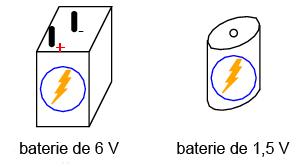
Dacă aveţi un multimetru manual, iar selectorul a fost pus pe cea mai mare valoare, indicaţia acestuia va fi slabă. Deplasaţi selectorul la următorul nivel inferior, şi reconectaţi bateria. Indicaţia ar trebui să fie mai puternică acum. Pentru obţinerea celor mai bune rezultate, mutaţi selectorul pe valoarea cea mai mică, dar astfel încât să nu depăşiţi scara de măsură a aparatului. Un multimetru digital va indica o astfel de „abatare” prin notaţia „OL” sau o serie de linii întrerupte, în funcţie de model. Măsuraţi mai multe tipuri de bateri pentru a vă obişnui cu selectarea poziţiilor optime.
Ce se întâmplă dacă atingeţi doar o sondă la un singur capăt al bateriei? Cum ar trebui să conectăm aparatul de măsură la bornele bateriei pentru a obţine o indicaţie? Ce ne spune acest lucru despre utilizarea voltmetrului şi despre natura tensiunii? Există tensiune într-un singur punct?
1.1.4 Măsurarea căderii de tensiune produsă de un LED
Luaţi din nou multimetrul, şi poziţionaţi selectorul pe cea mai mică valoare (DC). Atingeţi cu cele două sonde terminalii unui LED. Un LED, este un dispozitiv proiectat astfel încât să producă lumină la trecerea unui curent foarte mic prin el. Dar LED-urile pot şi să genereze o tensiune de curent continuu când sunt expuse la lumină, asemănător unei celule solare. Îndreptaţi LED-ul spre o sursă puternică de lumină, cu multimetrul conectat la bornele acestuia. Observaţi indicaţia aparatului de măsură:

Figure 3: multimetru şi LED
Bateriile generează tensiune electrică prin intermediul reacţiilor chimice. Când o baterie „moare”, acest lucru înseamnă de fapt că resursele sale chimice s-au terminat. Un LED, pe de altă parte, nu se bazează pe o formă de energie internă pentru generarea tensiunii electrice. Acesta transformă energia optică în energie electrică. Atâtă timp cât va exista o sursă de lumină întreptată asupra acestuia, LED-ul va produce tensiune.
1.1.5 Generatorul electric
O altă sursă potenţială de tensiune electrică prin transformarea energiei este generatorul. Luaţi un motor mic de curent continuu. Acesta se găseşte de obicei în jucării sau alte dispozitive electrice de mici dimensiuni, de unde îl puteţi „împrumuta”, sau îl puteţi cumpăra ca atare. Orice motor funcţionează ca şi generator dacă învărtim axul acestuia.
Conectaţi voltmetrul vostru la bornele motorului, la fel ca în cazul LED-ului sau al bateriei. Învârţiţi axul motorului cu mână. Aparatul de măsură ar trebui să indice o cădere de tensiune. Dacă nu puteţi ţine ambele sonde pe bornele bateriei, puteţi folosi terminali tip crocodil, astfel:

Figure 4: multimetru şi motor electric
Puteţi determina relaţia dintre tensiune şi viteza de rotaţie a axului? Ce se întâmplă cu indicaţia voltmetrului dacă măriţi viteza acestuia? Inversaţi apoi direcţia de rotaţie. Rezultatul este schimbarea polarităţii căderii de tensiune create de generator. Voltmetrul indică polaritatea prin intermediul direcţiei acului indicator (stânga sau dreapta, aparat analog) sau prin semn (plus sau minus, aparat digital).
Când sonda roşie este pozitivă (+) iar cea neagră negativă (-), voltmetrul va indica „direcţia” normală a căderii de tensiune. Dacă polaritatea tensiunii aplicate este inversă (negativ pe sonda roşie şi pozitiv pe cea neagră), indicaţia aparatului de măsură va fi „inversă”.
1.2 Măsurarea rezistenţei
1.2.1 Scopul experimentului
Experimentul următor descrie modul în care putem măsura rezistenţa unor obiecte. Nu trebuie neapărat să aveţi toate obiectele descrise mai jos pentru a învăţa efectiv despre rezistenţa. De asemenea, puteţi încerca şi cu alte obiecte. Totuşi, nu măsuraţi niciodată rezistenţa unui obiect sau circuit alimentat (aflat în funcţionare). Cu alte cuvinte, nu încercaţi să măsuraţi rezistenţa unei baterii sau a oricărei surse substanţiale de tensiune folosind un multimetru setat pe funcţia „rezistenţă” (Ω). Neluarea în considerare a acestei atenţionări va duce cel mai posibil la distrugerea aparatului de măsură şi eventual la rănirea personală.
1.2.2 Exemplificare conceptului de puncte electric comune
Setaţi multimetrul pe funcţia „Ω”, pe cea mai mare valoare disponibilă. În această situaţie, multimetrul îndeplineşte funcţia de ohmmetru. Atingeţi cele două sonde (neagră şi roşie) una de celalaltă. În acest caz, ohmmetrul ar trebui să indice o rezistenţă de 0 Ω. Dacă folosiţi în schimb un multimetru analogic, veţi observa o deplasare maximă a acului indicator în partea dreaptă.
Multimetrul poate fi folosit şi pentru detectarea stării de continuitate a circuitului, nu doar pentru măsurarea efectivă a valorilor rezistive. Putem testa, de exemplu, continuitatea unui fir electric prin conectarea celor două sonde la capetele acestuia. Ce se întâmplă cu indicaţia aparatului de măsură în acest caz? Ce putem spune despre un astfel de conductor electric dacă acul indicator al ohmmetrului nu s-ar deplasa deloc?
De menţionat, că multimetrele digitale, setate pe ohmmetru, indică lipsa continuităţii electrice dintr-un conductor sau component printr-un afişaj non-numeric. Unele model afişează „OL” (din engleză, Open Loop - circuit deschis), iar altele o serie de linii întrerupte.
Folosiţi multimetrul vostru pentru a determina continuitatea unei plăci electronice de test: un dispozitiv utilizat pentru construirea temporară a circuitelor. Folosiţi conductori subţiri de cupru, inseraţi în locurile libere de pe placă, pentru a putea conecta sondele aparatului de măsură la placă. Testaţi continuitatea lor.

Figure 5: măsurarea continuităţii unei plăci electronice de test
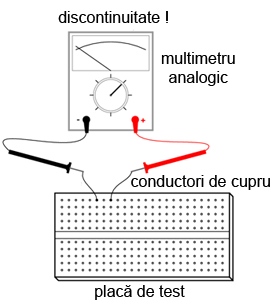
Figure 6: măsurarea continuităţii unei plăci electronice de test
Un concept foarte important în teoria electricităţii, strâns legat de cel al continuităţii, este cel al punctelor comune din punct de vedere electric. Punctele electrice comune, sunt puncte de contact dintr-un circuit sau dispozitiv, ce posedă o rezisenţă electric neglijabilă (extrem de mică) între ele.
Putem spune, prin urmare, conform experimentului de mai sus, că punctele verticale de o placă de test sunt comune din punct de vedere electric. Acest lucru se datorează faptului că există continuitate electrică între ele. Asemanător, punctele orizontale nu sunt electric comune, deoarece nu există continuitate electrică între ele.
Acest concept, de puncte comune, este foarte important de stăpânit. Motivul constă în faptul că exista câteva aspecte legate de tensiune ce au legătură directă cu acest concept, şi sunt foarte importante pentru analiza circuitelor şi depanarea lor. De exemplu, între două puncte electric comune, nu va exista niciodată o cădere de tensiune (substanţială).
1.2.3 Măsurarea unui rezistor
Alegeţi, de exemplu, un rezistor de 10 kΩ dintr trusa voastră. Valoarea rezistenţei este indicată printr-o serie de bezi colorate: maro, negru, portocaliu şi încă o culoare reprezentând precizia rezistorului: auriu (+/- 5%) sau argintiu (+/- 10%). Se consideră că rezistorii fără culoare de precizie au de fapt o precizie de +/- 20%. Alţi rezistori pot avea cinci bezi colorate pentru indicarea valorii şi a preciziei. În acest caz, culorile pentru un rezistor de 10 kΩ (10.000 Ω) vor fi: maro, negru, negru, roşu si o culoare de precizie.
Conectaţi sondele aparatului de măsură la terminalii (bornele) rezistorului conform figurii de mai jos, şi observaţi afişajul aparatului:

Figure 7: măsurarea unui rezistor
Dacă acul indicator se află foarte aproape de valoare de zero, va trebui să alegeţi o altă scară de măsură (mai mică), la fel ca în cazul măsurării unei tensiuni.
Dacă folosiţi un multimetru digital, ar trebui să vedeţi o cifră foarte aproape de 10 pe afişaj, şi un semn „k” mic în partea dreaptă. Acesta semnifică prefixul „kilo”, sau 1.000. Asemănător, încercaţi diferite scări de măsură prin intermediul selectorului, pentru a vedea care dintre ele oferă cea mai bună indicaţie.
Inversaţi acum sondele ohmmetrului între ele. Se modifică în acest caz indicaţia aparatului de măsură în vreun fel? Ce ne spune acest lucru despre rezistenţa unui rezistor? Ce se întâmplă dacă conectăm doar o singură sondă la unul dintre terminalii rezistorului? Ce ne spune acest lucru despre natura rezistenţei şi despre felul în care este ea măsurată? Cum se compară aceste rezultate cu rezultatele obţinute la măsurarea tensiunii?
În timp ce realizaţi măsurătoarea propriu-zisă, încercaţi să nu atingeţi ambele sonde cu degetele. Dacă faceţi acest lucru, veţi măsura în realitate combinaţia paralelă dintre rezistor şi corp. Acest lucru determină o indicaţie mai mică a ohmmetrului decât ar trebui în mod normal. Pentru măsurarea unei rezistenţe de 10 kΩ, eroarea va fi minimă, dar s-ar putea să fie mult mai mare dacă măsurăm alţi rezistori. Încercaţi acest lucru dacă dispuneţi de mai mulţi rezistori, de mărimi şi precizii diferite.
1.2.4 Măsurarea rezistenţei corpului
Puteţi măsură în siguranţa rezistenţa propriului vostru corp. Ţineţi vârful uneia dintre sonde între degetele de la mâna, iar sonda cealaltă cu degetele de la cealaltă mână. Ţineţi vârful sondelor în lungime, şi nu le prindeti exact de vârf. Observaţi indicaţia ohmmetrului. Corpul are de obicei o rezistenţa mai mare de 10.000 de ohmi între cele două mâini. Ar trebui să obţineţi o valoare aproximativ egală cu aceasta.
Umeziţi-vă degetele cu apă, şi remăsuraţi rezistenţa corpului cu ohmmetrul. Ce impact are acest lucru asupra indicaţiei aparatului. Umeziţi-vă apoi degetele în apa sărată şi remăsuraţi rezistenţa. Ce impact are acest lucru asupra rezistenţei corpului vostru?
Rezistenţa electrică este frecarea întâmpinată de electroni pe măsură ce aceştia se deplasează printr-un obiect. Cu cât rezistenţa dintre două puncte este mai mare, cu atât deplasarea electronilor între acele două puncte este mai dificilă. Cunoscând faptul că electrocutarea este cauzată de o deplasarea importantă de electroni prin corpului victimei, o creştere a rezistenţei corpului este o măsură excelentă de prevenire a accidentelor neplăcute.
1.2.5 Măsurarea rezistenţei diodei
Măsuraţi rezistenţa unei diode cu un ohmmetru. Încercaţi să inversaţi modul de conectare al sondelor pe terminalii diodei şi remăsuraţi rezistenţa. Care este diferenţa dintre diodă şi rezistenţa din acest punct de vedere?
1.2.6 Măsurarea rezistenţei grafitului
Luaţi o foaie de hârtie şi trasaţi o linie groasă cu un creion (nu cu pix!). Măsuraţi rezistenţa liniei cu ajutorul ohmmetrului, poziţionând sondele la capătului liniei astfel:

Figure 8: măsurarea rezistenţei grafitului
Aduceţi vârful sondelor mai aproape una de celaltă, dar menţinând contactul cu linia. Ce se întâmplă cu rezistenţa în acest caz, creşte sau scade? Dacă rezultatele sunt incompatibile, va trebui să retrasaţi linia, astfel încât densitatea ei să fie consistentă. Ce vă spune acest lucru despre legătura dintre rezistenţăşi lungimea unui material conductor?
1.2.7 Masurarea rezistenţei unei celule fotovoltaice
Conectaţi sondele aparatului de măsură la bornele unei celule fotovoltaice de. Măsuraţi varianţia rezistenţei datorată diferitelor expuneri la lumină. Asemănător experimentului cu LED, este indicat să folosiţi conductori cu crocodili pentru realizarea conexiuni componentului. În acest fel, puteţi ţine celula fotovoltaică în apropierea unei surse de lumină şi schimba în acelaşi timp scara aparatului:
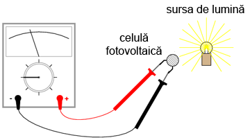
Figure 9: măsurarea rezistenţei unei celule fotovoltaice
Experimentăţi cu măsurarea rezistenţei diferitelor tipuri de materiale. Aveţi însă grijă să nu folosiţi ohmmetrul pe un component aflat sub tensiune, precum o baterie, de exemplu. Puteţi măsură rezistenţa următoarelor materiale, de exemplu: plastic, lemn, metal, apă curată, apă murdară, apă sărată, sticlă, diamant (de pe un inel), hârtie, cauciuc şi hârtie.
1.3 Realizarea unui circuit simplu
1.3.1 Scopul experimentului
În cele ce urmează vom realiza un circuit simplu, format dintr-un bec şi o baterie, precum cel prezentat în figura de mai jos:

Figure 10: circuit electric rezitiv simplu
Practic, circuitul nostru va arăta astfel:

Figure 11: circuit electric rezitiv simplu
Acesta reprezintă de fapt cel mai simplu circuit pe care îl vom studia în întreg volumul: o baterie şi un bec. Conectaţi becul la baterie, conform figurii de mai sus. Acesta ar trebui sa se aprindă în cazul în care ambele se află în stare de funcţionare, iar tensiunea bateriei este suficientă pentru a-l aprinde.
În cazul în care există o discontinuitate (circuit deschis), indiferent în ce parte a circuitului, becul nu se va aprinde. Nu contează locul apariţiei unei astfel de discontinuităţi. Experimentaţi cu scenariile prezentate mai jos ca să vă convingeţi de acest lucru:
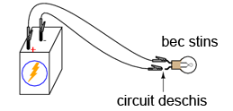
Figure 12: discontinuitatea unui circuit electric

Figure 13: discontinuitatea unui circuit electric

Figure 14: discontinuitatea unui circuit electric

Figure 15: discontinuitatea unui circuit electric
1.3.2 Desfăşurarea experimentului
Folosind multimetrul setat pe poziţia DC, măsuraţi căderea de tensiune la bornele bateriei, la bornele becului şi la capetele firului de scurt-circuit. Familiarizaţi-vă cu valorile normale ale tensiuni într-un cirucit aflat în funcţionare.
Acum, întrerupeţi circuitul şi remăsuraţi tensiune între aceleaşi seturi de puncte. Opţional, măsuraţi tensinea în locul întreruperii circuitului, astfel:

Figure 16: discontinuitatea unui circuit electric
Ce tensiuni sunt similare tensiunilor de dinainte? Ce tensiuni sunt diferite după introducerea întreruperii? Ce cantitate de tensiune se regăseşte la locul întreruperii? Care este polaritatea căderii de tensiune de la locul întreruperii, indicată de aparatul de măsură?
Refaceţi circuitul prin reconectarea bateriei la bec, şi întrerupeţi circuitul în alt loc. Măsuraţi din nou căderile de tensine. Familiarizaţi-va cu valorile tensiunilor într-un circuit deschis.
Realizaţi acelaşi circuit pe o placă de test. Aveţi grijă să introduceţi becul şi firele pe placă astfel încât să există contact între ele (continuitatea circuitului). Exemplul de mai jos este doar un exemplu, şi nu reprezintă singura modalitate de realizare a unui circuit pe placă:
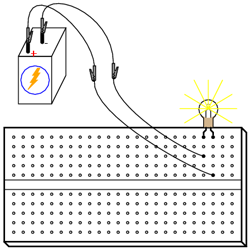
Figure 17: circuit electric pe o placă de test
Experimentaţi cu diferite configuraţii ale circuitului pe placa de test. Dacă întâmpinaţi o situaţie în care becul nu se aprinde, iar firele conductoare se încălzesc, aveţi probabil de a face cu un scurt-circuit. Cu alte cuvinte, există un drum cu o rezistenţă mai mică decât a becului. Curentul va „prefera” acest drum în detrimentul becului. Să vedem un astfel de exemplu:
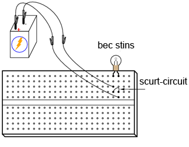
Figure 18: circuit electric pe o placă de test; scurt-circuit
Şi un exemplu tipic de scurt-circuit accidental realizat de obicei de cei care nu sunt familiarizaţi încă cu folosirea plăcii de test:
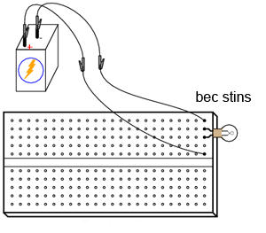
Figure 19: circuit electric pe o placă de test; scurt-circuit
Vă daţi seama de unde rezultă scurt-circuitul? Astfel de scenarii trebuie însă evitate cu orice preţ, întrucât scurt-circuitele pot duce la distrugeri materiale şi vătămări corporale.
Puteţi de asemenea realiza circuitul de mai sus folosindu-vă de o regletă de borne:
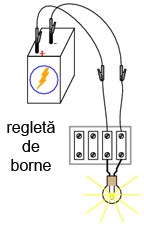
Figure 20: circuit electric pe o regletă de borne
1.4 Măsurarea curentului
1.4.1 Scopul experimentului
Următorul experiment are ca principal scop realizarea şi înţelegearea circuitului de mai jos:

Figure 21: circuit electric simplu
Practic, circuitul de mai sus arată astfel:

Figure 22: circuit electric simplu
1.4.2 Atenţie la scurt-circuitarea accidentală a ampermetrului
Cea mai uitilizată metodă de măsurare a curentului constă în întreruperea circuitului şi introducerea unui ampermetru în serie cu circuitul. În acest fel toţi electroni ce trec prin circuitu, vor trebui să treacă şi prin ampermetru. Deoarece măsurarea curentului în acest fel necesită introducerea aparatului de măsură în circuit, acest tip de măsurătoare este mai dificilă decât măsurarea tensiunii sau a rezistenţei.
Unele multimetre digitale, precum cel din figură, sunt prevăzute cu un conector separat pentru măsurarea curentului. Introduceţi sonda roşie în acest conector, marcat cu „A”.
În mod ideal, la bornele unui ampermetrului introdus în serie într-un circuit, nu va exista cădere de tensiune. Cu alte cuvinte, acesta se comportă precum un fir conductor, prezentând o rezistenţa foarte mică de la un capăt la celălalt. Prin urmare, un ampermetru se va comporta precum un scurt-circuit dacă este conectat în paralel cu o sursă substanţială de tensiune. Nu încercaţi totuşi să faceţi acest lucru. Curentul foarte mare rezultat poate duce la distrugerea aparatului:
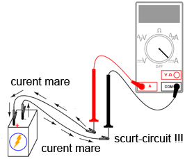
Figure 23: scurt-circuitarea ampermetrului
Ampermetrele sunt de obicei protejate împotriva unor astfel de scenarii prin intermediul unei siguranţe fuzibile localizate în interiorul carcasei. Încercaţi însă să evitaţi astfel de scenarii.
Puteţi verifica starea siguranţei fuzibile interne a multimetrului trecând pe „Ω” (măsurare rezistenţe), şi măsurând continuitatea între cele două sonde (şi prin siguranţa fuzibilă), astfel:
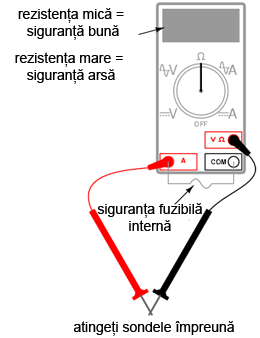
Figure 24: circuit electric simplu
1.4.3 Desfăşurarea experimentului
Realizaţi circuitul de mai sus constând dintr-o baterie şi un bec folosindu-vă de fire conductoare adiţionale. Utilizaţi aceste fire pentru conectarea becului la baterie. Verificaţi dacă becul se aprinde înainte de a conecta şi ampermetrul în circuit. Întrerupeţi apoi circuitul într-un anumit punct, şi conectaţi ampermetrul între cele două puncte rămase libere după deschiderea curentului, Măsuraţi valoarea curentului.
Ca de obicei, daca aparatul de măsură pe care îl folosiţi este manual, selectaţi la început valoarea cea mai mare a scalei. Mutaţi selectorul pe poziţii mai joase până când obţineţi cea mai precisă măsurătoare, având grijă să nu depăşiţi scare. Dacă indicaţia este „inversă” (acul indicator deplasat în stânga, sau o valoare negativă pe afişaj), inversaţi sondele între ele şi încercaţi din nou. Când ampermetrul indică o citire normală (nu inversă), electronii intră prin sonda neagră şi ies prin sonda roşie. Acesta este modul de determinare al direcţiei curentului folosind un aparat de măsură.
Pentru o baterie de 6 V şi un bec mic, curentul prin circuit este de ordinul miliamperilor (mA). Multimetrele digitale arată de obicei acest lucru printr-un mic „m” în partea dreaptă a afişajului.
Încercaţi să întrerupeţi circuitul în alt punct, şi conectaţi ampermetrul între acele puncte. Ce puteţi spune despre valoarea curentului? De ce credeţi că se întâmplă acest lucru?
Refaceţi circuitul pe o placă de test, astfel:
Figure 25: circuit electric pe placa de test
Este foarte posibil ca în acest moment să nu vă daţi seama cum aţi putea conecta un ampermetru la o placă de test. Cum putem conecta ampermetrul pentru a măsura întreaga cantitate de curent şi a nu crea un scurt-circuit. Realizaţi circuitul de mai jos:

Figure 26: circuit electric pe placa de test
Din nou, măsuraţi valoarea curentului prin diferite fire ale acestui circuit. Urmaţi aceleaşi metode precum cele de mai sus. Ce observaţi în legătură cu aceste măsurători? Rezultatele măsurătorilor realizate pe placa de test ar trebui să fie identice cu rezultate obţinute fără placa de test, din exemplul precedent.
Dacă ar fi să construim circuitul de mai sus pe o regletă de borne, rezultatul ar fi similar:

Figure 27: circuit electric pe regleta de borne
1.5 Legea lui Ohm (experiment)
1.5.1 Scopul experimentului
În acest experiment vom încerca să ilustrăm „funcţionarea” legii lui Ohm, construind circuitul de mai jos:

Figure 28: circuit electric simplu
Practic, circuitul va arăta astfel:
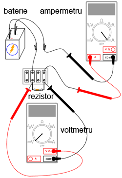
Figure 29: circuit electric simplu
1.5.2 Desfăşurarea experimentului
Alegeţi un rezistor din trusa voastră. Măsuraţi rezistenţa lui cu ajutorul multimetrului. Notaţi-vă rezultatul pentru a-l putea folosi pe viitor.
Construiţi un circuit format dintr-o baterie şi un rezistor. În figură, circuitul este realizat cu ajutorul unei reglete de borne, dar orice mijloc de realizare a circuitului este la fel de bun. Setaţi multimetrul pe scara de tensiune apropiată şi măsuraţi căderea de tensiune la bornele rezistorului în timp ce este alimentat de la baterie. Notaţi-vă acest rezultat pentru a-l putea folosit mai departe, alături de valoarea rezistenţei de mai sus.
Poziţionaţi selectorul multimetrului pe cea mai mare scară de curent disponibilă. Deschideţi circuitul şi conectaţi ampermetrul între cele două puncte libere. Ampermetrul va fi acum în serie cu bateria şi rezistorul. Selectaţi cea mai bună scară de tensiune: cea care dă cea mai precisă indicaţie a curentului, fără a depăşi scara. Notăţi şi această valoare a curentului alături de valoarea rezistenţei şi a tensiunii.
Luaţi valorile pentru tensiune şi rezistenţa măsurate mai sus şi aplicaţi legea lui Ohm pentru a determina valoarea curentului din circuit. Comparaţi valoarea astfel calculată cu valoarea măsurată cu ajutorul multimetrului:
I = E / R
unde, E = tensiunea în volţi I = curentul în amperi R = rezistenţa în ohmi
Asemănător, luaţi valorile măsurate pentru tensiune şi curent şi aplicaţi legea lui Ohm pentru calcularea rezistenţei circuitului. Comparaţi valoarea obţinută cu cea măsurată cu ajutorul multimetrului:
R = E / I
Şi, în sfârşit, luaţi valorile măsurate mai sus pentru rezistenţa şi curent şi aplicaţi legea lui Ohm pentru calcularea tensiunii circuitului. Comparati valoarea calculată cu cea măsurată:
E = IR
Rezultatele obţinute prin măsurări şi prin calcul ar trebui să fie foarte apropiate, pentru toate cele trei situaţii. Orice diferenţă între respectivele valori ale tensiunii, curentului sau rezistenţei se datorează mai mult ca sigur erorilor aparatului de măsură. Totuşi, aceste diferenţe ar trebui să fie mici, cel mult câteva procente. Desigur, unele aparate de măsură sunt mai precise decât altele.
Înlocuiţi rezistorul din circuitu cu alţi rezistori de mărimi diferite. Refaceţi măsurătorile de rezistenţă, tensiune şi curent. Refaceţi apoi calculele pentru aceste mărimi (cei trei paşi de mai sus). Observaţi relaţia matematică simplă dintre variaţia rezistenţei şi variaţia curentului din circuit. Tensiunea ar trebui însă să rămână aproximativ egală pentru oricare din rezistorii introduşi în circuit, deoarece acesta este rolul unei baterii: să menţină o cădere de tensiune constantă între bornele sale.
1.6 Rezistenţa non-liniară
1.6.1 Scopul experimentului
Vom încerca în cele ce urmează să arătăm că, în unele cazuri, valoarea rezistenţei nu este constantă. Pentru soluţionarea „misterului” variaţiei rezistenţei, vom face apel la „metoda ştiinţifică”. Pe parcurs, vom realiza circuitul de mai jos:
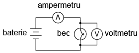
Figure 30: circuit electric simplu
Practic, circuitul de mai sus va arăta astfel:
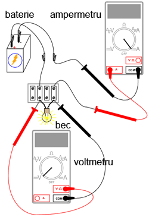
Figure 31: circuit electric simplu
1.6.2 Desfăşurarea experimentului
Măsuraţi rezistenţa becului cu ajutorul multimetrului. Valoarea acestei rezistenţe se datorează filamentului subţire din interiorul becului. Rezistenţa acestuia este semnificativ mai mare decât rezistenţa unui conductor normal, dar mai mică decât a oricărui rezistor din experimentele precedente. Notaţi-vă această valoare a rezistenţei pentru utilizarea ei ulterioară.
Construiţi un circuit format dintr-o baterie şi un bec. Selectaţi o scară de tensiune apropiată şi măsuraţi căderea de tensiune la bornele becului când acesta este alimentat (aprins). Notaţi-vă şi această valoare, lângă cea a rezistenţei.
Setaţi-vă multimetrul pe cea mai mare scară de curent disponibilă. Deschideţi circuitul şi conectaţi ampermetrul între capetele libere ale circuitului deschis. Ampermetrul este acum parte din circuit, fiind legat în serie cu bateria şi becul. Selectaţi cea mai bună scară de curent. Notaţi-vă si această valoare a curentului alături de celelalte două valori de mai sus.
Luaţi valorile tensiunii şi rezistenţei obţinute la măsurătorile de mai sus şi aplicaţi legea lui Ohm pentru calcularea curentului din circuit. Comparaţi această valoare calculată cu valoarea măsurată a curentului din circuit:
I = E / R
Ceea ce ar trebui să observaţi este existenţa unei diferenţe între curentul măsurat şi cel calculat. Valoarea calculată este mult mai mare. De ce se întâmplă acest lucru?
Pentru a face lucrurile şi mai interesante, încercaţi să măsuraţi din nou rezistenţa becului, folosind de această dată un alt model de multimetru (dacă dispuneţi de unul, desigur). Va trebui să scoateţi becul din circuit pentru a putea face o astfel de măsurătoare, deoarece tensiunile existente în exteriorul aparatului de măsură afectează valorile măsurate ale rezistenţei. Aceasta este o regulă generală pe care va trebui să o ţineţi minte: măsuraţi rezistenţa doar după ce componentul respectiv nu mai este alimentat cu energie electrică!
Folosind un ohmmetru diferit, valoarea rezistenţei becului va fi probabil diferită. Acest comportament este foarte diferit de cel al rezistorilor din ultimul experiment. De ce se întâmplă acest lucru? Ce anume ar putea influenţa rezistenţa filamentului lămpii, şi care e diferenţa dintre cele două condiţii, aprind şi stins? De asemenea, care e diferenţa între măsurătorile efectuate cu diferite tipuri de aparate de măsură? De ce se întâmplă acest lucru?
Problema de mai sus este un foarte bun exemplu de aplicare a metodei ştiinţifice. Dacă aţi găsit un posibil răspuns pentru variaţia rezistenţei becului între cele două condiţii, aprins şi stins, încercaţi să reproduceţi această scenariul respectiv prin alte mijloace. De exemplu, aţi putea presupune că rezistenţa becului variază datorită expunerii la lumină (propria ei lumină, când becul este aprins). Această variaţie ar putea prin urmare explica variaţia dintre curenţii măsuraţi şi cei calculaţi. Dacă acesta este cazul, încercaţi să expuneţi becul la o sursă de lumină externă. Măsuraţi apoi rezistenţa acestuia. Dacă observaţi o diferenţă substanţială a rezistenţei între cele două scenarii, atunci ipoteza voastră s-ar putea să fie adevărată, deoarece aţi demonstrat-o experimental. În caz contrar, ipoteza voastră s-a dovedit falsă. Acest lucru înseamnă că există o altă cauză pentru variaţia rezistenţei. Care este aceasta?
1.7 Disiparea puterii
1.7.1 Scopul experimentului
Pentru realizarea acestui experiment, veţi avea nevoie de doi rezistori cu o putere de 0,25 W: unul de 10 Ω şi celălalt de 330 Ω. Nu folosiţi o baterie mai mare de 6 V. Este indicat ca termometrul utilizat să fie cât mai mic cu putinţă, pentru a putea măsura rapid căldura produsă de rezistor.
Scopul acestui experiment este familiarizarea cu legea lui Joule, importanţa puterii nominale a componentelor precum şi importanţa punctelor electric comune. Circuit pe care îl vom realiza este următorul:

Figure 32: circuit electric simplu
Practic, circuitul va arăta conform figurii de mai jos. Atenţie însă, nu ţineţi rezistorul între degete atunci când este alimentat.
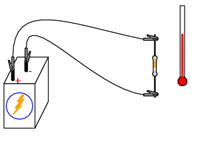
Figure 33: circuit electric simplu
1.7.2 Realizarea circuitului şi a măsurătorilor
Măsuraţi valoarea fiecărui rezistor cu ohmmetrul. Notaţi-vă valorile obţinute pentru a le putea folosi în viitor.
Conectaţi rezistorul de 330 Ω la bateria de 6 V, precum în figura de mai sus. Folosiţi conductori adiţionali. Conectaţi prima dată conductorii de legătură la terminalii rezistorului. Conectaţi apoi (şi nu înainte!) conductorii la baterie. Putem evita astfel atingerea suprafeţei rezistorului atunci când acesta este alimentat.
Poate vă întrebaţi de ce am încerca să evităm contactul cu suprafaţa rezistorului când acesta este alimentat. Răspunsul este că acesta se va încălzi. Acesta este şi motivul pentru care avem nevoie de un termometru, pentru a măsură această temperatură.
Cu rezistorul de 330 Ω conectat la baterie, măsuraţi tensiunea cu ajutorul voltmetrului. Putem realiza acest lucru în mai multe feluri. Tensiunea poate fi măsurată direct la bornele bateriei, sau direct la bornele rezistorului. Tensiunea bateriei este aceiaşi cu tensiunea la bornele bateriei în circuitul de faţă. Încercaţi să măsuraţi tensiunea în ambele puncte pentru a vă lămuri că acest lucru este adevărat. Acesta este un principiu al punctelor electric comune, ceea ce avem şi în circuitul de mai jos:
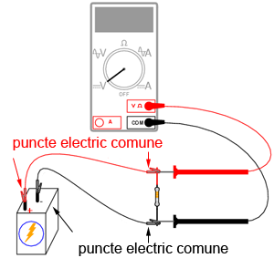
Figure 34: circuit electric simplu
1.7.3 Calcularea puterii disipate
Acum că avem toate datele necesare (rezistenţa, tensiune şi curent), putem calcula puterea disipată. Putem folosi oricare dintre cele trei relaţii - cunoscute sub numele de „legea lui Joule” - cunoscând cel puţin două valori dintre cele trei enumerate mai sus:
P = IE; P = I2R; P = E2 / R
Încercaţi să calculaţi puterea disipată în acest circuit, folosindu-vă de cele trei valori măsurate mai sus. Indiferent de formula pe care o aplicaţii, rezultatul va fi aproximativ acelaşi. Presupunând că avem o baterie de 6 V şi un rezistor de 330 Ω, puterea disipată va fi de 0,109 W, sau 109 mW. Din moment ce puterea nominală a rezistorului (specificată de producător) este de 0,25 W sau 250 mW, rezistorul nostru poate disipa fără probleme o putere de 109 mW. Fiindcă valoarea efectivă a puterii este aproximativ jumătate din puterea nominală, rezistorul se va încălzi putin, dar nu se va supra-încălzi. Atingeţi mijlocul rezistorului cu vârful termometrului. Care este temperatura acestuia?
Puterea (maximă) nominală (înscrisă pe component sau specificată de producător) a unui component electric nu ne spune cantitatea de putere ce o va disipa componentul respectiv. Ne spune în schimb, care este cantitate de putere ce o poate disipa fără a duce la distrugerea acestuia. Dacă puterea efectiv disipată în timpul funcţionării depăşeşte puterea nominală a componentului, temperatura acestuia va creşte atât de mult încât va duce la distrugerea lui.
Pentru a ilustra cele spuse mai sus, deconectăti rezistorul de 330 Ω. Înlocuiţi-l cu un rezistor de 10 Ω. Evitaţi atingerea acestuia după ce aţi alimentat circuitul, deoarece se va încălzi repede. Atenţie, ţineţi rezistorul de 10 Ω departe de materiale inflamabile de orice fel, atunci când este alimentat!
Probabil că nu veţi avea timp suficient să măsuraţi tensiunea şi curentul înainte ca rezistorul să scoată fum. Dacă observaţi un astfel de comportament, întrerupeţi circuitul şi lăsaţi rezistorul câteva clipe pentru a se răci. Măsuraţi apoi rezistenţa acestuia cu ohmmetrul şi vedeţi dacă există o variaţie faţă de valoarea iniţială a rezistenţei. Dacă valoarea se încadrează încă în limita de +/-5 (între 9,5 şi 10,5 Ω), reconectaţi-o în circuit şi lăsaţi-o să mai fumege puţin.
Ce se întâmplă cu valoarea rezistenţei pe măsură ce rezistorul se arde din ce în ce mai tare? Distrugerea totală a rezistorului duce la o valoare a rezistenţei infinită între cei doi terminali.
Realizaţi acum calculele pentru aflarea puterii disipate de rezistorul de 10 Ω folosind legile lui Joule. Un rezistor de 10 Ω conectat la o baterie de 6 V va disipa o putere de 3,6 W, de 14,4 ori mai mult decât puterea nominală a acestuia. Nu e de mirare atunci că „ia foc” aşa de repede după conectarea la baterie.
1.8 Circuit cu înrerupator
1.8.1 Scopul experimentului
Utilizarea unui întrerupător într-un circuit simplu. Pentru acest experiment aveţi nevoie de un întrerupător simplu, mecanic (întrerupător de veioză sau de perete, de exemplu). Vom realiza aşadar circuitul de mai jos:
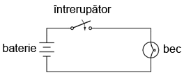
Figure 35: circuit electric cu întrerupător
Practic, circuitul va arăta astfel:

Figure 36: circuit electric cu întrerupător
1.8.2 Desfăşurarea experimentului
Construiţi circuitul de mai sus format dintr-o baterie, un întrerupător şi un bec, precum în figura de mai sus. Acest circuit este cu atât mai impresionant cu cât firele conductoare sunt mai lungi, întrucât se poate vedea faptul că întrerupătorul poate controla curentul din circuit, indiferent de mărimea circuitului.
Măsuraţi tensiunea la bornele bateriei, la bornele întrerupătorului (între cele două şuruburi). Masuraţi tensiunea şi la bornele becului, în ambele poziţii ale întrerupătorului. Când întrerupătorul este dezactivat (becul este stins), spunem că acesta este deschis. La fel ca în exemplele precedente, orice întrerupere a circuitului, indiferent de locatie, duce la întreruperea curentului prin întreg circuitul. Rezultatul este, evident, stingerea becului.
1.9 Realizarea unui electromagnet
1.9.1 Scopul experimentului
Aplicarea „regulii mâini stângi” şi realizarea practică a unui electromagnet. Veţi avea nevoie de un conductor lung de electromagnet. Aceşti conductori nu sunt altceva decât conductori de cupru izolaţi prin lăcuire, folosiţi pentru construirea transformatoarelor sau a motoarelor electrice. Puteţi obţine un astfel de conductor dintr-un transformator (stricat).
Veţi avea de asemenea nevoie de un bolţ, cui sau o bară metalică. Atenţie, oţelul inoxidabil nu este magnetic, si prin urmare nu va putea fi folosit pe post de miez electromagnetic!
Pe parcursul experimentului vom realiza circuitul de mai jos:

Figure 37: circuit electric cu electromagnet
Practic, circuitul va arăta astfel:

Figure 38: circuit electric cu electromagnet
1.9.2 Desfăşurarea experimentului
Înfăsuraţi pentru început o bandă izolatoare în jurul barei metalice (sau cui, ce aveţi la dispoziţie). Acest lucru va proteja conductorii împotriva abraziunii. Asiguraţi-vă că după finalizarea înfăsurării, va rămân cele două captele libere pentru a putea alimenta electromagnetul. Înfăşuraţi apoi conductorul izolat în jurul barei metalice de câteva sute de ori, pe cât de egal se poate (nu toate înfăşurările în acelaşi loc). Puteţi desigur să suprapuneţi conductorii, întrucât sunt izolaţi prin lăcuire.
Singura regulă pe care trebuie să o respectaţi, este că toate înfăsurările trebuie să fie realizate în aceiaşi direcţie. De exemplu, toate să fie în sensul acelor de ceasornic. După ce aţi făcut câteva sute de înfăşurări în jurul elementului metalic, înfăşuraţi un nou strat de bandă izolatoare peste conductori. Îndepărtăti lacul izolator de pe capetele conductorilor. Conectaţi apoi aceste capete la o baterie.
La trecerea curentului electric prin înfăşurare, va lua naştere un câmp magnetic destul de puternic: câte un pol la fiecare capăt al elementului metalic. Acest fenoment poartă numele de electromagnetism. Puteţi folosi un compas pentru identificarea polilor magnetic Nord şi Sud ai electromagnetului.
După ce electromagnetul a fost conectat la baterie, aduceţi un magnet permanent în apropierea unuia dintre poli. Observaţi ce tip de forţa apare între cei doi, de atracţie sau de respingere? Inversaţi orientarea magnetului permanent. Ce tip de forţă există în acest caz? Încercaţi să folosiţi electromagnetul pentru a atrage diferite obiecte metalice ce le aveţi la îndemână (agrafe, ace de gămălie, etc.), la fel cum aţi folosi un magnet permanent.
1.10 Inducţia electromagnetică
1.10.1 Scopul experimentului
Experimentul de faţă este asemănător experimentului precedent. Veţi avea nevoie de un electromagnet şi un multimetru. Prin realizarea circuitului de mai jos, vom demonstra relaţia dintre intensitatea câmpului magnetic şi tensiunea indusă:
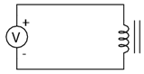
Figure 39: exemplificarea inducţiei elecromagnetice
Circuitul practic va arăta astfel:

Figure 40: exemplificarea inducţiei elecromagnetice
Inducţia electromagnetică este inversul fenomenului de electromagnetism. În exemplul precedent am produs un câmp magnetic cu ajutorul unei tensiuni electrice. În exemplul de faţa, vom inversa această situaţie, şi vom produce un curent electric cu ajutorul unui câmp magnetic. Exista totuşi, o diferenţă importantă: în cazul electromagnetismului, câmpul magnetic este produs de un curent constant (curent continuu). Inducţia electromagnetică necesită o deplasare a magnetului sau a bobine pentru a produce o tensiune.
1.10.2 Desfăşurarea experimentului
Conectaţi multimetrul la capetele înfăşurării. Selectaţi cea mai sensibilă scară de curent continuu disponibilă. Deplasaţi magnetul permanent înspre electromagnet şi înapoi. Observaţi polaritatea şi valoarea tensiunii induse. Deplasaţi magnetul cu viteze diferite. Ce anume determină valoarea tensiunii induse?
Încercaţi acelaşi lucru cu capătul celălalt al electromagnetului. Încercaţi acelaşi lucru cu partea opusă a magnetului permanen. Comparaţi rezultatele.
Dacă folosiţi un multimetru analogic, utilizati conductori de legătură (prelungire) pentru a poziţiona aparatul de măsură cât mai departe de bobină. Câmpul magnetic generat de magnetul permanent poate afecta buna funcţionare a aparatului şi poate indica citiri greşite. Multimetrele digitale nu sunt afectate de câpurile magnetice.
2 Circuite de cc
2.1 Conectarea bateriilor în serie
2.1.1 Scopul experimentului
Vom vedea mai jos modul de conectare a bateriilor pentru a obţine diferite valori ale tensiunii rezultate. Deşi putem folosi baterii de orice mărime, este recomandat să aveţi cel puţin două baterii cu valori ale tensiunii diferite, pentru a face experimentul mai interesant.
Pe parcurs, vom realiza circuitul de mai jos (schemă + circuit practic):
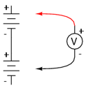
Figure 41: conectarea bateriilor în serie

Figure 42: conectarea bateriilor în serie
2.1.2 Desfăşurarea experimentului
Conectarea componentelor în serie înseamnă conectarea lor în linie, astfel încât să existe un singur drum pe care să poată circula electronii. Conectaţi aşadar două baterii electrice în serie. Borna pozitivă a unei baterii trebuie să fie conectată la borna negativă a celeilalte. Măsuraţi căderea de tensiune la bornele fiecărei baterii, cu ajutorul unui voltmetru. Măsuraţi apoi căderea de tensiune la bornele celor două baterii conectate în serie. Veţi observa că cele două valori ale tensiunii se adună:

Figure 43: conectarea bateriilor în serie
Încercaţi să conectaţi baterii de tensiuni diferite în serie. De exemplu, conectaţi o baterie de 6 V cu una de 9 V. Care este valoarea totală a tensiunii în acest caz?
Inversaţi apoi conexiunile celor două baterii, conectând borna negativă(-) a uneia dintre baterii cu borna negativă(-) a celeilalte. Pe scurt, conectaţi-le în contra-serie, astfel:

Figure 44: conectarea bateriilor în anti-serie
Care este valoarea tensiunii în acest caz. Care este diferenţa faţă de cazul precedent? Puteţi deduce polaritatea căderii de tensiune, cunoscând polarităţile individuale ale bateriilor şi valorile tensiunilor lor?
2.2 Conectarea bateriilor în paralel
2.2.1 Scopul experimentului
Vom realiza circuitele de mai jos (schema teoretică şi circuitul practic), şi vom observa efectul conectării surselor de putere în paralel asupra tensiunii şi a curentului din circuit:
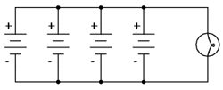
Figure 45: conectarea bateriilor în paralel

Figure 46: conectarea bateriilor în paralel
2.2.2 Derularea experimentului
Conectaţi o baterie de 6 V la un bec de 12 V, cu o putere de 25 sau 50 W. Becul va lumina relativ slab în acest caz. Utilizaţi voltmetrul pentru determinarea căderii de tensiune la bornele becului, astfel:
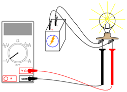
Figure 47: conectarea bateriilor în paralel
Indicaţia voltmetrului ar trebui să fie mai mică decât tensiunea normală a bateriei. Dacă veţi folosi voltmetrul pentru citirea căderii de tensiune direct la bornele bateriei, veţi observa că şi în acest caz tensiunea este mai mică. De ce se întâplă acest lucru? Valoarea mare a curentului absorbit de bec (putere înaltă) duce la scăderea tensiunii la bornele bateriei. Acest lucru se datorează căderii de tensiune dezvoltate la bornele rezistenţei interne a bateriei.
Putem rezolva această problemă prin conectarea bateriilor în paralel. Astfel, fiecare baterie va fi nevoită să susţină doar o fracţiune din curentul total necesar becului. Conexiunile paralel presupun conectarea tuturor terminalelor pozitive (+) ale bateriilor între ele (terminale electric comune). Acelaşi lucru este valabil şi în cazul terminalelor negative (-).
Adăugaţi pe rând bateriile în paralel, observând tensiunea becului cu fiecare nouă baterie:

Figure 48: conectarea bateriilor în paralel
De asemenea, intensitatea luminii becului ar trebui să crească cu fiecare nouă baterie adăugată în paralel. Încercaţi să măsuraţi curentul unei baterii. Comparaţi această valoare cu valoarea curentului total (prin bec). Cea mai uşoară metodă de măsurare a curentului unei singure baterii, este următoarea:

Figure 49: conectarea bateriilor în paralel
Întrerupem circuitul pentru o singură baterie. Introducem apoi ampermetrul în locul întreruperii, astfel încât circuitul este acum închis, şi putem măsura curentul prin bateria respectivă. Măsurarea curentului total este similară: deschidem circuitul într-un loc prin care circulă curentul total şi conectăm ampermatrul între cei doi conductori liberi:

Figure 50: conectarea bateriilor în paralel
Observaţi diferenţa dintre curentul unei singure baterii şi curentul total. Pentru a obţinea cea mai mare iluminare, avem nevoie însă de o conexiune serie-paralel. Două baterii de 6 V conectate în serie vor genera o tensiune de 12 V. Conectăm apoi două astfel de combinaţii serie în parale. O astfel de combinaţie poate susţine mult mai uşor valoarea curentului necesară alimentării becului. Tensiunea pe fiecare baterie va fi în acest caz mult mai aproape de 6 V:
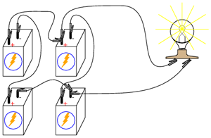
Figure 51: conectarea bateriilor în paralel
2.3 Divizor de tensiune
2.3.1 Scopul experimentului
Pentru derularea acestui experiment veţi avea nevoie de diferiţi rezistori cu valori între 1 kΩ şi 100 kΩ. Altfel, s-ar putea să nu obţineţi valori corecte ale tensiunii şi curentului măsurat cu ajutorul multimetrului. În cazul unor rezistenţe mici, rezistenţa internă a ampermetrului are un impact destul de mare asupra acurateţii măsurătorii. Rezistenţele foarte mari pot cauza probleme măsurătorilor de tensiune. Rezistenţa internă a voltmetrului în acest caz modifică rezistenţa circuitului când acesta este conectat în paralel cu un rezistor de valoare mare.
În urma realizării acetui experiment, vă veţi familiariza cu utilizarea legii lui Kirchhoff pentru tensiune, precum şi cu realizarea unui divizor de tensiune. Vom realiza circuitul de mai jos (diagrama):
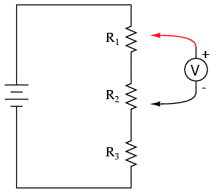
Figure 52: divizor de tensiune
Practic, acest poate fi realizat în oricare din formele de mai jos (care va este mai la îndemână):

Figure 53: divizor de tensiune; circuit practic
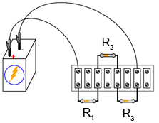
Figure 54: divizor de tensiune; circuit practic
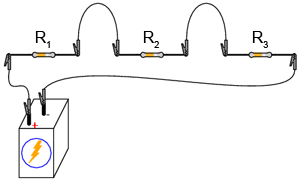
Figure 55: divizor de tensiune; circuit practic
Alternativ, puteţi încerca realizarea tuturor celor trei variante de mai sus. Vă veţi familiariza astfel cu toate cele trei metode. Fiecare are avantajele şi dezavantajele sale. Ultima variantă - în care toate componentele sunt conectate între ele folosind conductori cu crocodili - este cea mai neprofesională, dar perfectă pentru un experiment precum cel de faţă. Construcţia circuitului pe placa de test este cea mai versatilă. Placa de test permite o densitate mare de componente (multe componente pe o suprafaţă mică), dar circuitului este temporar. Regleta de borne oferă un circuit mult mai permanent, dar o densitatea mică de componente.
2.3.2 Desfăşurarea experimentului
Alegeţi trei rezistori şi măsuraţi valoarea rezistenţei fiecăruia cu un ohmmetru. Notaţi-vă aceste valori pentru utilizarea lor ulterioara.
Conectaţi cei trei rezistori în serie. Conectaţi apoi şi bateria, conform figurilor de mai sus. Măsuraţi tensiunea bateriei cu un voltmetru după ce aţi realizat circuitul. Notaţi-vă şi această valoare. Este indicat să măsuraţi tensiunea bateriei în timpul alimentării rezistorilor, deoarece această valoare s-ar putea să difere puţin faţă de tensiunea normală a bateriei. Acest circuit nu ar trebui să prezinte o sarcină suficient de mare (curentul necesar nu este destul de mare) pentru a cauza scăderea tensiunii bateriei. Totuşi, măsurarea tensiunii bateriei sub sarcină este indicată în orice situaţie, întrucât oferă valori de calcul mult mai realiste.
Aplicaţi legea lui Ohm (I = E / R) pentru a calcula curentul din circuit. Verificaţi această valoare calculata prin măsurarea curentului cu un ampermetru astfel (metoda este similară indiferent de varianta circuitului):

Figure 56: divizor de tensiune; măsurarea curentului
Dacă valorile rezistorilor pe care i-aţi ales se află într-adevăr în intervalul 1 kΩ - 100 kΩ, iar tensiunea bateriei este de aproximativ 6 V, valoarea curentului ar trebui să fie destul de mică (mA sau µA). Fiţi atenţi la prefixul afişat, într-unul din colţuri, în cazul multimetrelor digitale. Este foarte uşor să uităm aceste prefixe când citim valoarea măsurători.
Valoarea măsurată a curentului ar trebui să fie foarte apropiată de valoarea calculată folosind legea lui Ohm. Înmulţiţi acum valoarea calculată pentru curent cu valoarea rezistenţei fiecărui rezistor. Aflaţi astfel valoarea căderilor de tensiune (E = IR). Măsuraţi apoi cu ajutorul voltmetrului căderea de tensiune reală pe fiecare rezistor, verificând astfel acurateţea calculelor. Din nou, cele două valori, cea calculată şi cea măsurată, trebuie să fie extrem de apropiate.
2.3.3 Explicarea divizorului de tensiune
Fiecare cădere de tensiune a rezistorilor este doar o fracţiune din tensiunea totală. De aici şi denumirea de divizor de tensiune a acestui circuit. Această valoare subunitară este determinată de rezistenţa individuală a rezistorului şi de rezistenţa totală a circuitului.
Dacă tensiunea unui rezistor este de 50% din tensiunea totală a bateriei, acest procent va rămâne neschimbat atâta timp cât valorile rezistorilor nu se modifică, indiferent de tensiunea bateriei. Prin urmare, dacă tensiunea totală este de 6 V, tensiunea rezistorului respectiv va fi 50% din această valoare, adică 3 V. Dacă tensiunea totală este 20 V, căderea de tensiune la bornele rezistorului va fi de 10 V, sau 50% din 20 V.
2.3.4 Validarea legii lui Kirchhoff pentru tensiune
Identificaţi fiecare punct din circuit cu un număr. Punctele ce sunt electric comune trebuiesc notate cu acelaşi număr, astfel:

Figure 57: divizor de tensiune; notarea punctelor din circuit
Practic, circuitul se poate realiza prin lipirea unei benzi adezive la capătul conductorilor pe care este scris numărul punctului respectiv de contact din circuit:

Figure 58: divizor de tensiune; notarea punctelor din circuit
Folosiţi un voltmetru digital (acest lucru este important!). Măsuraţi căderile de tensiune în jurul buclei formate din punctele 0-1-2-3-0. Notaţi-vă fiecare din aceste tensiuni, cât şi semnul indicat de voltmetrul. Cu alte cuvinte, dacă valoarea afişată de voltmetru este -1,325 V, notaţi această valoare cu semnul minus. Nu inversaţi sondele voltmetrului pentru a obţine o citire „corectă” (pozitivă). Semnul matematic este foarte important pentru exemplificarea legii lui Kirchhoff. Paşii pe care trebuie sa-i urmaţii sunt următorii:

Figure 59: divizor de tensiune; măsurarea căderilor de tensiune
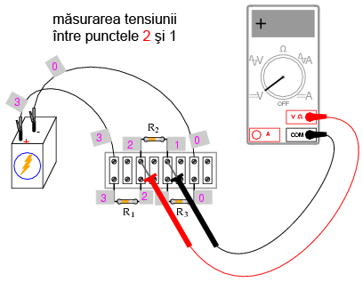
Figure 60: divizor de tensiune; măsurarea căderilor de tensiune
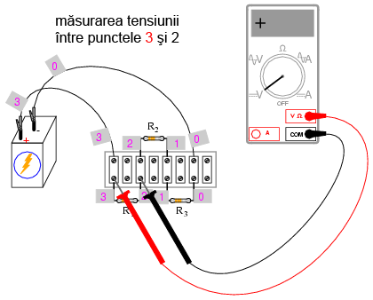
Figure 61: divizor de tensiune; măsurarea căderilor de tensiune

Figure 62: divizor de tensiune; măsurarea căderilor de tensiune
Folosind astfel voltmetrul pentru a „păşi” în jurul circuitului, veţi obţine trei tensiuni pozitive şi o tensiune negativă:
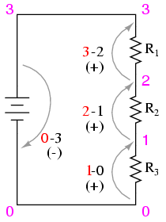
Figure 63: divizor de tensiune; măsurarea căderilor de tensiune
Adunaţi toate aceste valori algebric (respectând semnul). Rezultatul sumei trebuie să fie zero. Acesta este principiul fundamental al legii lui Kirchhoff pentru tensiune: suma algebrică a tutor căderilor de tensiune dintr-o buclă trebuie să fie egală cu zero.
Indiferent de sensul de parcugere al buclei, rezultatul este acelaşi. Încercaţi să realizaţi o buclă închisă între oricare seturi de puncte. Suma algebrică a căderilor de tensiune va fi tot timpul egală cu zero. Această lege este valabilă indiferent de configuraţia circuitului studiat: serie, paralel, serie-paralel sau circuit complex.
2.4 Divizor de curent
2.4.1 Scopul experimentului
Asemănător exemplului precedent, vom avea nevoie de o baterie de 6 V şi o serie de rezistori cu valori cuprinse între 1 kΩ şi 100 kΩ. Faţă de exemplul precedent, ne vom familiariza cu legea lui Kirchhoff pentru curent şi cu funcţionarea unui circuit divizor de curent.
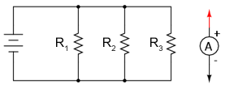
Figure 64: divizor de curent
Circuitul se poate realiza practic în mai multe moduri:

Figure 65: divizor de curent
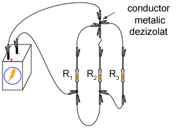
Figure 66: divizor de curent

Figure 67: divizor de curent
În mod normal, nu este recomandat să conectaţi mai mult de doi conductori sub acelaşi terminal (şurub). În exemplul de mai sus, există trei conductori conectaţi împreună la terminalul din dreapta sus. Am realizat acest lucru doar pentru a demonstra un concept (sumarea curentului la nodul unui circuit), şi nu reprezintă o tehnică profesională de realizare a circuitelor.
Experimentaţi cu toate cele trei variante de realizare a circuitului pentru a vă familiariza cu avantajele şi dezavantajele fiecăruia.
2.4.2 Desfăşurarea experimentului
Alegeţi trei rezistori şi măsuraţi valoarea rezistenţei fiecăruia dintre ei cu ajutorulu unui ohmmetru. Notaţi-vă valoarea acestora pe o hârtie. Conectaţi cei trei rezistori în paralel şi conectaţi apoi şi baterie, precum în figurile de mai sus. Măsuraţi tensiunea bateriei cu un voltmetru, după ce aţi conectat rezistorii la bornele acesteia. Notaţi-vă şi această valoare pe hârtie. Este indicat să măsuraţi tensiunea bateriei în timp ce este alimentată, deoarece valoarea măsurată s-ar putea să difere într-o mică măsura de valoarea normală (fără sarcină).
Măsuraţi tensiunea la bornele fiecărui rezistor. Ce observaţi? Într-un circuit serie, valoarea curentului este aceiaşi prin toate componentele în orice moment. Într-un circuit paralel, tensiunea este variabila comună a tuturor componentelor.
Aplicaţi legea lui Ohm (I = E / R) pentru a calcula curentul prin fiecare rezistor. Verificaţi apoi această valoare calculată măsurând curentul real cu ajutorul unui ampermetru, astfel: conectaţi sonda roşie a ampermetrului în punctul de întâlnire a bornelor pozitive (+) ale rezistorilor; conectaţi borna neagră, pe rând, la capătul celălalt (-) al rezistorilor. Observaţi atât atât valoarea cât şi polaritatea curentului. De exemplu, pentru a calcula curentul prin rezistorul R1:

Figure 68: divizor de curent; măsurarea curentului

Figure 69: divizor de curent; măsurarea curentului
Măsuraţi curentul pentru toţi cei trei rezistori. Comparaţi aceste valori cu rezultatele obţinute anterior. Conectând ampermetrul asemenea figurilor de mai sus, toate cele trei indicaţii trebuie să fie pozitive, nu negative.
2.4.3 Validarea legii lui Kirchhoff pentru curent
Măsuraţi apoi curentul total din circuit, astfel: ţineţi sonda roşie a ampermetrului într-un singur punct din circuit; deconectaţi conductorul ce duce la borna pozitivă (+) a bateriei şi atingeţi-l cu sonda neagră.

Figure 70: divizor de curent; măsurarea curentului
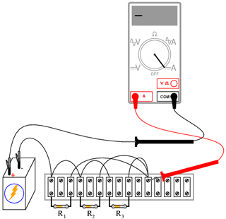
Figure 71: divizor de curent; măsurarea curentului
Notaţi-vă atât valoarea cât şi semnul curentului indicat de ampermetru. Faceţi suma algebrică dintre această valoare şi valorile curenţilor pentru cei trei rezistori. Ce observaţi similar legii lui Kirchhoff pentru tensiune? Legea lui Kirchhoff pentru curent spune că suma tuturor curenţilor dintr-un nod trebuie să fie egală cu zero. Această lege este foarte utilă în analiza matematică a circuitelor electrice.
2.4.4 Explicare divizorului de curent
Observaţi cele patru valori ale curenţilor obţinute din măsurători. Consideraţi-le pe toate ca şi valori pozitive. Primele trei reprezintă curentul prin fiecare rezistor. a patra valoare reprezintă curentul total prin circuit ca şi suma pozitivă a celor trei curenţi pe fiecare ramură. Fiecare curent de ramură este o fracţiune, sau un procent, din curentul total. Din acest motiv, acest tip de circuit (cu rezistori conectaţi în paralel) poartă numele de divizor de curent.
2.5 Divizor de tensiune cu potenţiometru
2.5.1 Scopul experimentului
Pentru derularea acestui experiment veţi avea nevoie de două baterii de 6 V, o mină de grafit (creion mecanic), un potenţimetru liniar cu o singură înfăşurare (5 kΩ - 50 kΩ) şi un potenţiometru liniar cu înfăşurări multiple (1 kΩ - 20 kΩ).
Vom experimenta aşadar cu modul de realizare şi de funcţionare a unui divizor de tensiune. Vom vedea, de asemenea, modul în care se însumează tensiunile în serie. Circuitul pe care îl vom realiza, este următorul (schema plus circuite implementate practic):
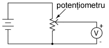
Figure 72: divizor de tensiune cu potenţiometru

Figure 73: divizor de tensiune cu potenţiometru

Figure 74: divizor de tensiune cu potenţiometru
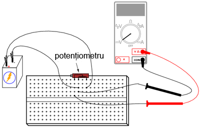
Figure 75: divizor de tensiune cu potenţiometru
2.5.2 Desfăşurarea experimentului
Începeţi experimentul cu circuitul format din mina de creion. Grafitul din care este realizată mina este un conductor prost de curent electric. Acesta va juca prin urmare rolul unui rezistor conectat la bornele bateriei de 6 V prin intermediul crocodililor. Conectaţi voltmetrul precum în figură şi atingeţi cu sonda roşie mina de grafit. Deplasaţi sonda roşie în lungul minei şi observaţi indicaţia voltmetrului. Care este poziţia sondei pentru care indicaţia voltmetrului este maximă?
Practic, mina de grafit se comportă precum o pereche de rezistori. Raportul dintre cele două rezistenţe este stabilit de poziţia sondei roşii pe lungimea acestuia:
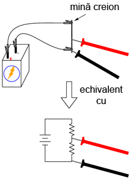
Figure 76: divizor de tensiune cu potenţiometru
Modificaţi apoi poziţia sondelor voltmetrului, astfel încât să măsuraţi tensiunea pe „rezistorul de sus” a minei, astfel:

Figure 77: divizor de tensiune cu potenţiometru
Repoziţionaţi sonda neagră pe lungimea minei şi observaţi indicaţia voltmetrului. Care este poziţia pentru care tensiunea indicată de voltmetru este maximă? Există vreo diferenţă între această situaţie şi cea precedentă? De ce?
2.5.3 Circuitul cu potenţiometru
Realizaţi circuitul cu potenţiometru prezentat la începutul capitolului, în locul celui cu mină de creion. Măsuraţi tensiunea bateriei în timp ce potenţiometrul este alimentat. Notaţi-vă această valoare pe o hârtie. Măsuraţi tensiunea dintre perie şi capătul potenţiometrului conectat la borna negativă (-) a bateriei. Ajustaţi mecanismul potenţiometrului până când voltmetrul indică exact 1/3 din tensiunea totală. Pentru o baterie de 6 V, această valoare va fi de aproximativ 2 V.
Conectaţi apoi două baterii în serie, pentru a obţine o tensiune de 12 V pe potenţiometru. Măsuraţi tensiunea totală a bateriei şi măsuraţi apoi tensiunea între aceleaşi două puncte pe potenţiometru (între perie şi borna negativă). Împărţiţi tensiunea măsurată pe potenţiometru cu tensiunea totală măsurată pe baterie. Rezultatul ar trebui să fie 1/3, aceiaşi valoare a divizorului de tensiune ce am găsit-o şi înainte:
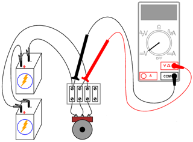
Figure 78: divizor de tensiune cu potenţiometru
2.6 Potenţiometrul ca şi reostat
2.6.1 Scopul experimentului
Vom avea nevoie de o baterie de 6 V, un potenţiometru liniar cu o singură înfăşurare (5 kΩ) şi un motor electric mic cu magneţi permanenţi. Vom învăţă în acest experiment cum să utilizăm un reostat, cum să folosim un potenţiometru pe post de reostat, cum putem controla viteza de rotaţie a unui motor şi cum putem folosi un voltmetru pentru a verifica continuitatea circuitului în locul ampermetrului.
Pe parcursul experimentului vom realiza circuitul de mai jos (diagramă plus implementare practică):
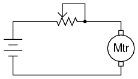
Figure 79: circuit electric cu potenţiometru şi motor

Figure 80: circuit electric cu potenţiometru şi motor
2.6.2 Realizarea reostatului din potenţiometru
Potenţiometrele se utilizează de obicei pe post de divizori de tensiune, poziţia periei determinând raportul de divizare. Totuşi, există aplicaţii în care nu avem nevoie de un divizor de tensiune variabil, ci doar un rezistor variabil: un dispozitiv cu două terminale. Tehnic, un rezistor variabil este cunoscut sub numele de reostat, dar potenţiometrele pot fi utilizate foarte bine pe post de reostat.
În cea mai simplă comfiguraţie, potenţiometrul poate fi folosit pe post de reostat prin simpla utilizare a doi dintre terminalii acestuia. Cel de al treilea terminal este lăsat neconectat şi neutilizat:
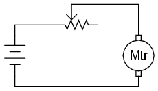
Figure 81: circuit electric cu potenţiometru şi motor
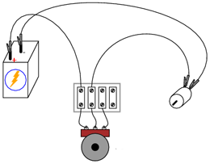
Figure 82: circuit electric cu potenţiometru şi motor
Deplasarea periei potenţiometrului astfel încât aceasta să se apropie de celălalt terminal utilizat rezultă în descreşterea rezistenţei. Direcţia necesară creşterii sau descreşterii rezistenţei poate fi schimbată prin utilizarea unor seturi diferite de terminali:
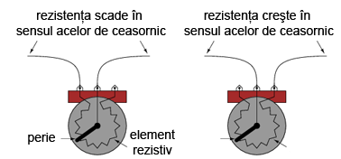
Figure 83: potenţiometru
Fiţi atenţi însă să nu folosiţi cei doi terminali externi. Acest lucru nu va duce la modificarea rezistenţei atunci când poziţia periei se schimbă. Cu alte cuvinte, potenţiometrul nu va mai funcţiona ca şi o rezistenţă variabilă:

Figure 84: potenţiometru
2.6.3 Controlul vitezei motorului
Realizaţi circuitul prezentat la început, utilizând doar doi terminali ai potenţiometrului. Observaţi modul în care poate fi controlată viteza motorului prin ajustarea poziţiei periei potenţiometrului. Experimentaţi cu diferite conexiuni ale terminalilor. Observaţi comportamentul motorului. Dacă potenţiometrul vostru are o rezistenţă mare (măsurată între cei doi terminali externi), s-ar putea ca motorul să nu se rotească deloc până în momentul în care peria este adusă foarte aproape de terminalul extern conectat (rezistenţa mică).
După cum puteţi observa, viteza motorului poate fi variată folosind un reostat conectat în serie cu acesta. Reostatul modifică rezistenţa totală a circuitului şi limitează curentul total. Această metodă de control este însă ineficientă, deoarece puterea disipată (pierdută) de reostat este destul de mare. O metodă mult mai eficientă constă în alimentarea motorului cu o putere pulsatorie, folosind un tranzistor. O metodă similară este folosită şi în cazul dimmer-elor casnice.
2.6.4 Conectarea terminalului liber la terminalul-perie (opţional)
Când folosim potenţiometrul pe post de reostat, adesea, terminalul nefolosit este conectat la terminalul perie, astfel:

Figure 85: circuit electric cu potenţiometru şi motor
Într-o primă instanţă, acest lucru pare complet inutil, întrucât nu are niciun impact asupra controlului rezistenţei. Puteţi verifica acest lucru prin introducerea unui nou fir în circuitul realizat. Comparati comportamentul motorului înainte şi după această modificare:

Figure 86: circuit electric cu potenţiometru şi motor
Dacă potenţiometrul este în stare bună de funcţionare, acest conductor adiţional nu are niciun efect asupra funcţionării motorului. Totuşi, dacă peria pierde contactul cu elementul rezistiv din interiorul potenţiometrului, această conexiune adiţională menţine circuitul închis. În unele aplicaţii, acest lucru poate fi important.
Puteţi simula un asemenea „defect” a contactului periei. Deconectaţi terminalul din mijloc al potenţiometrului din circuit. Măsuraţi tensiunea motorului pentru a vă asigura că acesta este încă alimentat:
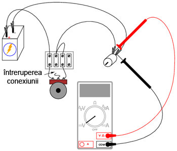
Figure 87: circuit electric cu potenţiometru şi motor
2.6.5 Verificarea circuitelor cu voltmetrul în locui ampermetrului
Ar fi trebuit să măsuraţi curentul din circuit în loc de tensiunea motorului pentru a verifica continuitatea circuitului (circuit închis). Totuşi, această metodă este mult mai sigură deoarece nu implica deschiderea circuitului pentru conectarea în serie a ampermetrului. Ori de câte ori folosim un ampermetru, există riscul unui scurt-circuit prin conectarea acestuia la bornele unei surse substanţiale de tensiune. Rezultatul poate fi distrugerea aparatului de măsură sau chiar accidentarea persoanei respective.
Nu este şi cazul voltmetrelor însă. Prin urmare, ori de câte ori puteţi la fel de bine măsura tensiunea în detrimentul măsurării curentului (utilizarea voltmetrului în detrimentul ampermetrului), pentru a verifica exact acelaşi lucru, varianta tensiunii este cea indicată.
2.7 Termoelectricitate
2.7.1 Scopul experimentului
Vom vedea pe parcursul acestui experiment modul de funcţionare şi utilizare a unei termocuple. Veţi avea nevoie de un conductor de cupru şi unul de fier (eventual de aluminiu), ambele dezizolate, o lumânare şi bucăţi de gheaţă. Circuitul electric pe care îl vom realiza este cel de jos:

Figure 88: realizarea unei termocuple
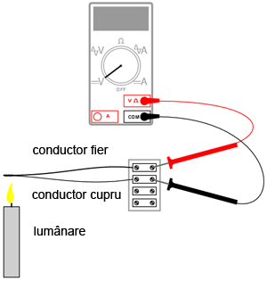
Figure 89: realizarea unei termocuple
2.7.2 Realizarea termocuplei
Răsuciţi un capăt al conductorului de fier cu un capăt al conductorului de cupru. Conectaţi celelalte capete rămase libere la o bornă de reglete. Setaţi voltmetrul pe cea mai sensibilă scară şi conectaţi-l la borna de regletă, conform figurii de mai sus. Indicaţia voltmetrului ar trebui să fie aproximativ 0 V.
Ceea ce am construit mai sus poartă numele de termocuplă: un dispozitiv folosit pentru generarea unei căderi de tensiune mici. Tensiunea produsă este proporţională cu diferenţa de temperatură dintre punctul de contact al celor doi conductori şi punctul de contact al voltmetrului cu cele două capete rămase libere. Dacă temperatura contactului este egală cu temperatură capetelor libere, tensiunea produsă va fi 0 V. Indicaţia voltmetrului indică exact acest lucru.
2.7.3 Generarea tensiunii cu ajutorul termocuplei create
Aprindeţi o lumânare şi puneţi contactul (vârful) termocuplei în flacără. Observaţi indicaţia voltmetrului. Îndepărtaţi contactul termocuplei din flacără şi lăsaţi-l să se răcească până când indicaţia voltmetrului se apropie din nou de zero.
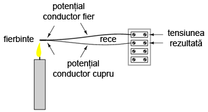
Figure 90: generarea tensiunii cu o termocuplă
Atingeti apoi contactul termocuplei cu un cub de gheaţă şi observaţi indicaţia voltmetrului. Ce puteţi spune despre valoare tensiunii generate, este mai mică sau mai mare decât în cazul precedent? Care este diferenţa dintre polaritatea tensinilor generate în cele două cazuri?
După ce aţi îndepărtat cubul de gheaţă, încălziţi contactul termocuplei ţinându-l între degete. Va dura puţin până când temperatura acestuia va atinge temperatura corpului vostru. Aveţi răbdare însă şi observaţi îndicaţia voltmetrului.
Termocuplele sunt folosite pe post de dispozitive de măsurare a temperaturii. Ralaţia matematică dintre diferenţa temperaturii şi tensiunea rezultată este destul de liniară. Prin măsurarea tensiunii, putem determina temperatura la punctul de contact.
2.8 Circuit de mediere
2.8.1 Scopul experimentului
Vom vedea în cele ce urmează cum puem realiza media aritmedică a valorilor tensiunilor cu ajutorul unei reţele de rezistori. Aceasta este de fapt o aplicaţie a teoremei lui Millman. Veţi avea nevoie de 3 baterii (sau surse de alimentare în c.c.), fiecare cu o tensiune diferită şi trei rezistori cu rezistenţe egale (între 10 kΩ şi 47 kΩ fiecare). Practic, vom realiza circuitul de mai jos:

Figure 91: circuit de mediere a tensiunilor printr-o reţea de rezistori

Figure 92: circuit de mediere a tensiunilor printr-o reţea de rezistori

Figure 93: circuit de mediere a tensiunilor printr-o reţea de rezistori
Acest circuit realizează funcţia matematică de mediere. Practic, intrarea circuitului constă din cele trei tensiuni, iar ieşirea din media aritmetică a acestora, astfel:
Vieşire = (V1 + V2 + V3) / 3
2.8.2 Realizarea şi funţionarea circuitului de mediere
Construiţi acest circuit conform figurii de mai sus. Măsuraţi apoi tensiunile celor trei baterii cu ajutorul unui voltmetru. Notaţi-vă aceste valori pe o foaie de hârtie şi calculaţi media lor aritmetică, conform formulei de mai sus. Când măsuraţi tensiunea fiecărei baterii, ţineţi sonda neagră conectată la „masă” (partea bateriei conectată direct la celelalte baterii prin conductorii de legătură). Atingeţi celălalt terminal al bateriei cu sonda roşie. Polaritatea este foarte importantă în această situaţie. Puteţi observa din schema de mai sus, că una din baterii este conectată invers faţă de celelalte două. Tensiunea acestei baterii va trebui să fie negativă atunci când o măsurăm cu un voltmetru digital. Tensiunile celorlalte două baterii vor fi pozitive.
Când voltmetrul este conectat în circuit conform figurii de mai sus, valoarea indicată (Vieşire) va fi media aritmetică a tensiunilor celor trei baterii. Dacă valorile rezistorilor sunt astfel alese încât să fie foarte apropiate între ele, tensiunea de ieşire a circuitului va fi foarte aproape de valoarea calculată pe hârtie.
Dacă una dintre baterii este deconectată, valoarea tensiunii de ieşire va fi egală cu media aritmetică a celor două tensiuni rămase (baterii). În cazul în care conductorii de legătură conectaţi iniţial la bornele bateriei înlăturate din circuit, sunt conectaţi împreună, circuitul va realia media aritmetică a celor două tensiuni rămase împreună cu valoarea de 0 V. Tensiunea de ieşire va fi prin urmare mai mică:
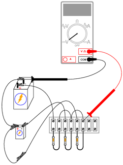
Figure 94: circuit de mediere a tensiunilor printr-o reţea de rezistori
2.8.3 Concluzii şi notă istorică
Datorită simplităţii acestui circuit, nu-l putem numi un „calculator” în adevăratul sens al cuvântului. Totuşi, acesta realizează foarte funcţia matematică de mediere, şi o realizează mult mai rapid decât sunt capabile calculatoarele digitale. Acestea din urmă realizează operaţiile matematice printr-o succesiune de paşi discreti. Calculatoarele analogice (precum cel de mai sus), realizează calculele într-un mod continuu, valorificând legea lui Ohm şi legile lui Kirchhoff în scop aritmetic. Calcularea răspunsului depinde de viteza de propagare a tensiunii prin întreg circuitul, practic, viteza luminii (aproximativ)!
Prin introducerea circuitelor de amplificare, semnalele de tensiune din reţelele analogice de calculatoare pot fi amplificate şi re-utilizate în alte reţele pentru a realiza o varietate de funcţii matematice. Astfel de calculatoare analogice sunt excelente pentru realizarea funcţiilor de integrare şi diferenţiere. Ele pot fi folosite prin urmare pentru simularea comportamentului unor sisteme mecanice, electrice şi chiar chimice destul de complexe.
La un moment dat, calculatoarele analogice erau considerate instrumentul cel mai important pentru cercetările din domeniul ingineriei. Pe parcurs însă, acestea au fost înlocuite de calculatoarele digitale, ce realizează operaţiile matematice cu o precizie mai bună decât cele analogice, chiar dacă viteza teoretică este mult mai mică. Cu toate acestea, realizarea practică a unor astfel de circuite, pentru începători, duce la o înţelegerea mult mai bună a funcţionării circuitelor electrice în general. Ce alte operaţii matematice credeţi că pot fi realizate cu astfel de circuite analogice?
2.9 Baterie din cartof
2.9.1 Scopul experimentului
Ne propunem să realizăm o baterie din cartof. Deşi acest experiment foloseşte cartoful pe post de baterie, puteţi folosi o varietate de fructe şi legume pe post de potenţiale baterii. Veţi avea nevoie prin urmare, pe lângă cartof (sau lămâie, de exemplu), de o bucată de zinc sau de metal galvanizat şi un conductor de cupru. Pentru electrodul de zinc, puteţi folos un cui galvanizat. Vom vedea importanţa reacţiilor chimice în funcţionarea bateriilor precum şi modul în care suprafaţa electrozilor influenţează funcţionarea bateriei. Ciurcuitul realizat este următorul:

Figure 95: baterie din cartof
2.9.2 Realizarea bateriei din cartof
Introduceţi atât cuiul cât şi conductorul de cupru în cartof. Măsuraţi tensiunea produsă de baterie cu un voltmetru. Asta e tot!
Experimentaţi însă cu diferite metale, diferite adâncimi şi distanţe între electrozi. Cum puteţi obţine cea mai mare tensiune posibilă cu ajutorul cartofului? Încercaţi alte legume şi comparaţi tensiunile de ieşire pentru metale similare pe post de electrozi.
Desigur, alimentarea unei sarcini cu o astfel de „baterie” este foarte dificilă. Nu vă asteptaţi aşadar să alimentaţi un bec, un motor sau orice altceva. Chiar dacă tensiunea de ieşire este suficient de bună, rezistenţa internă a bateriei este destul de mare. Conectând mai mulţi cartofi în configuraţii serie, paralel sau serie-paralel, putem obţine o tensiune şi un curent destul de mare pentru alimentarea unei sarcini mici. Puteţi realiza acest lucru?
2.10 Încărcarea şi descărcarea condensatorului
2.10.1 Scopul experimentului
Vom observa modul de încărcare şi descărcare al condensatoarelor. Vom calcula constanta de timp a circuitului şi capacitatea rezultată prin conectarea condensatoarelor în serie şi paralel.
2.10.2 Materiale necesare
Pentru acest experiment veţi avea nevoie de o baterie de 6 V (sau sursă de tensiune echivalentă), două condensatoare electrolitice mari, de cel puţin 1000 µF, doi rezistori de 1 kΩ şi de un întrerupător. Circuitul realizat arată astfel:
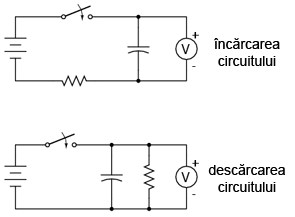
Figure 96: încărcarea şi decărcarea unui condensator

Figure 97: încărcarea unui condensator
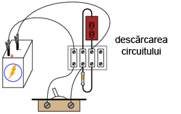
Figure 98: decărcarea unui condensator
2.10.3 Atenţie la condensatoarele electrolitice
Acest experiment necesită utilizarea unor condensatoare mari pentru producerea unor constante de timp adecvate. Altfel, nu am putea urmări comportamentul circuitului cu ajutorul unui voltmetru şi a unui cronometru. Atenţie însă, majoritatea condensatoarelor de o asemenea capacitate sunt condensatoarele electrolitice. Polaritatea acestora este importantă! Cel puţin unul din terminalele fiecărui condensator este de obicei marcat cu polaritatea respecitvă. De obicei, pentru astfel de mărimi, condensatoarele sunt marcate printr-unul sau mai multe minusuri (-) pe partea terminalului negativ.
Dacă nu respectaţi indicaţia polarităţii, şi prin urmare, modul corect de alimentare al lor, mai mult ca sigur că aceste condensatoare se vor deteriora, chiar şi în cazul unei tensiuni mici de 6 V. Distrugerea condensatoarelor electrolitice constă de obicei în explozia lor şi împrăştierea materialelor chimice din interior. Încercaţi să evitaţi acest lucru !
2.10.4 Realizarea circuitului şi măsurarea constantei de timp
Construiţi circuitul de încărcare a condensatorului, precum în figura de mai sus. Măsuraţi tensiunea la terminalele condensatorului atunci când întrerupătorul este închis. Observaţi cum tensiunea creşte încet, cu timpul, şi nu brusc cum se întâmplă în cazul unui rezistor. Puteţi „reseta” condensatorul înapoi la tensiunea de 0 V prin scurt-circuitarea terminalelor acestuia pe o sarcină (rezistor, de exemplu).
Constanta de timp (τ) a unui circuit rezistor-condensator se calculează prin înmulţirea capacităţii şi a rezistenţei circuitului. Pentru un rezistor de 1 kΩ şi un condensator de 1.000 µF, constanta de timp ar trebui să fie 1 secundă. Aceasta este durata de timp pentru care tensiunea condensatorului creşte de la 0 V la aproximativ 63,2% din tensiunea sa finală: tensiunea bateriei.
Ar fi interesant de realizat un grafic, în care să vedem tensiunea condensatorului cu timpul. Pentru a putea realiza acest grafic totuşi, trebuie să găsim o metodă de încetinire a circuitului. O fereastră de o secundă nu este chiar suficientă pentru a putea măsura tensiuni cu un voltmetru.
Cum putem însă creşte constanta de timp a circuitului. Dacă ne uităm la formulă, există doar două posibilităţi: modificăm rezistenţa totală din circuit sau/si modificăm capacitatea totală a circuitului. Experimentaţi cu diferite combinaţi serie şi parelel, având la dispoziţie o pereche de rezistori identici şi o pereche de condensatori identici. Găsiţi combinaţia pentru care timpul de încărcare este cel mai lung.
Desigur, conectarea rezistorilor în serie formează o rezistenţă şi mai mare. Este valabil acest lucru şi în cazul condensatoarelor? Realizând acest circuit, vă puteti lămuri ce se întâmplă cu capacitatea condensatoarelor conectate în serie, respectiv paralel. Asiguraţi-vă însă de conectarea corectă a condensatoarele în circuit!
Circuitul de descărcare este similar celui de încărcare. Singura deosebire este că de această dată, tensiunea este maximă la închiderea întrerupătorului şi scade treptat după deschiderea acestuia. Experimentaţi şi în acest caz cu diferite combinaţii de rezistori şi condensatoare.
2.11 Circuit de diferenţiere
2.11.1 Scopul experimentului
Experimentul indică modul de realizare a unui circuit de diferenţiere. După realizarea circuitului, veţi putea obţine o înţelegere emipirică a derivatei unei funcţii.
2.11.2 Materiale necesare
Pentru realizarea circuitului veţi avea nevoie de două baterii de 6 volţi, un condensator de 0,1 µF, un rezistor de 1 MΩ şi un potenţiometru liniar, simplu, de 5 kΩ. Valoarea potenţiometrului nu este neapărat critică. Totuşi, teoretic, o valoare mai mică a rezistenţei potenţiometrului conduce la rezultate mai bune în acest experiment. Circuitul final arată astfel:
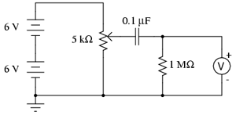
Figure 99: circuit de diferenţiere
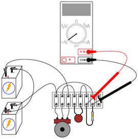
Figure 100: circuit de diferenţiere
2.11.3 Realizarea circuitului
Măsuraţi tensiune dintre peria potenţiometrului şi punctul de masă reprezentat în figura de mai sus (terminalul negativ al bateriei de 6 V din partea de jos). Aceasta este tensiunea de intrare a circuitului. Puteţi observa cum această tensiune variază continuu între 0 şi 12 V pe măsură ce deplasăm peria potenţiometrului. Din moment ce utilizăm potenţiometrul pe post de divizor de tensiune, acest comportament ar trebui să vă fie deja cunoscut.
Măsuraţi apoi tensiunea la bornele rezistorului de 1 MΩ pe măsură ce învârţiţi potenţiometrul. Setaţi voltmetrul pe cea mai sensibiliă (mV) scară. Ce indică voltmetrul atunci când nu învârtim controlul potenţiometrului? Învârtiţi potenţiometrul încet, în sensul acelor de ceasornic, şi observaţi indicaţia voltmetrului. Realizaţi acelaşi lucru, dar în sens invers acelor de ceasornic. Care este diferenţa dintre cele două direcţii ale deplasării potenţiometrului?
Încercaţi să controlaţi potenţiometrul astfel încât să obţineţi o indicaţie stabilă a tensiunii. Ce tip de deplasare a potenţiometrului oferă cea mai stabilă indicaţie a tensiunii la bornele rezistorului de 1 MΩ?
2.11.4 Derivata unei funcţii în analiza matematică
O funcţie matematică ce reprezintă rata de variaţie a unei variabile faţă de o alta, poartă numele de derivată. Acest circuit simplu ilustrează conceptul de derivare prin producerea unei tensiuni de ieşire proporţionale cu variaţia tensiunii de intrare în raportul cu timpul. Prin urmare, acest circuit mai este cunoscut sub numele de circuit de diferenţiere.
La fel ca circuitul de mediere, circuitul de diferenţiere poste fi considerat un calculator analogic. Diferenţierea este o operaţie matematică mult mai complexă decât medierea, în special când este implementată într-un calculator digital. Acest circuit este aşadar un exemplu excelent al eleganţei circuitelor analogice în realizarea calculelor matematice. Desigur, se pot realiza circuite de diferenţiere mult mai precise prin combinarea reţelelor rezistor-condensator cu circuite electronice de amplificare.
3 Circuite de ca
3.1 Transformator – sursă de putere
3.1.1 Scopul experimentului
Comportamentul unui transformator coborâtor de tensiune; scopul şi utilizarea transformatoarelor cu priză mediană; conectarea corectă şi sigură a cablurilor de alimentare.
3.1.2 Materiale necesare
Veţi avea nevoie de un transformator cu priză mediană pe înfăşurarea secundară (220 V ca - 12 V ca), o regletă de borne cu cel puţin trei terminale, un prelungitor, un întrerupător. Opţional, o carcasă şi o siguranţă fuzibilă.
Transformatorul poate fi obţinut dintr-un radio vechi sau cumpărat ca atare. Dacă vă decideţi să folosiţi şi siguranţa fuzibilă, alegeţi una lentă. Transformatoarele necesită de obicei curenţi mari la conectarea iniţială la o sursă de curent alternativ. Aceşti curenţi tranzitorii vor topi o siguranţa rapidă. Determinaţi amperajul siguranţei fuzibile prin împărţirea puterii transformatorului (VA) la 220 V: cu alte cuvinte, calculaţi curentul maxim permis în înfăsurarea primară şi alegeţi o siguranţă fuzibilă corespunzătoare.
Circuitul final va arăta astfel:

Figure 101: sursă de tensiune joasă de curent alternativ
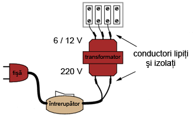
Figure 102: sursă de tensiune joasă de curent alternativ
3.1.3 Realizarea sursei de tensiune joasă
Atenţie, realizarea acestui experiment implică utilizarea unor tensiuni periculoase ! Asiguraţi-vă că toţi conductorii de tensiune înaltă (220 V) sunt izolaţi corespunzător. Nu trebuie să aveţi sub nicio formă conductori dezizolaţi pe partea cu primarul transformatorului. Lipiţi toate conexiunile pentru o siguranţă sporita. Folosiţi bandă izolatoare adevărată (nu scotch, bandă de împachetat sau orice altă variantă) pentru izolarea conexiunilor lipite.
Dacă doriţi introducerea întregului ansamblu într-o carcasă metalică, folosiţi o fişă cu trei contacte (alimentare plus împământare). Conectaţi împământarea direct pe carcasa metalică pentru o siguranţă sporită.
Înainte de introducerea fişei (ştecărului) în priză, verificaţi pentru siguranţă aparatul cu un ohmmetru. Cu întrerupătorul închis, măsuraţi rezistenţa dintre un contact al fişei şi carcasa metalică. Ar trebui să obţineţi o rezistenţă infinită (maximă). Dacă aparatul de măsură înregistrează continuitate (o rezistenţă oarecare, dar nu infinită), atunci există un scurt-circuit între unul dintre conductoarele de putere şi carcasă. Acest lucru este periculos şi trebuie evitat cu orice preţ!
Verificaţi apoi şi înfăşurările transformatorului pentru continuitate. Cu întrerupătorul închis, ar trebui să obţineţi o rezistenţă mică între cele două contacte ale fişei. Când întrerupătorul este oprit, rezistenţa ar trebui să crească spre infinit (circuit deschis - discontinuitate). Măsuraţi rezistenţa pe partea secundarului. Rezistenţa înfăşurării secundare trebuie să fie mult mai mică decât cea a primarului. De ce?
Introduceţi fişa într-o priză şi închideţi întrerupătorul. Veţi obţine la ieşire (pe partea secundarului) o tensiune de curent alternativ între perechile de terminale. Între două terminale, tensiunea va fi de 12 V. Între unul din aceste terminale şi celălalt terminal, tensiunea va fi jumătate, adică 6 V. Acest al treilea terminal reprezintă priza mediană pe secundarul transformatorului.
Păstraţi acest circuit asamblat, deoarece îl veţi folosi pentru alimentarea altor experimente prezentate de aici înainte. Sursa de tensiune astfel realizată va fi desemnată de acum înainte prin următoarea diagramă:

Figure 103: sursă de tensiune joasă de curent alternativ
3.2 Construirea unui transformator
3.2.1 Scopul experimentului
Construirea unui transformator electric este o ocazie foarte bună de a studia efectele electromagnetismului şi inducţia electromagnetică. Acest lucru îl vom realiza în cele ce urmează.
3.2.2 Materiale necesare
Veţi avea nevoie de bare plate din oţel, diferite şuruburi, piuliţie şi şaibe, conductor de cupru (pentru magnet/transformator) de 0,32 mm şi o sursă de alimentare în curent alternativ de mică putere. Conductorul de cupru pentru magnet/transformator este un conductor subţire izolat prin lăcuire. Puteţi folosi aproape orice diametre, dar cel de 0,32 mm este recomandat pentru simplul fapt că putem realiza multe înfăşurări într-un spaţiu relativ îngust. Transformatorul final va arăta aproximativ astfel:
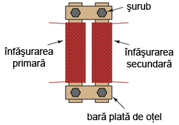
Figure 104: construirea unui transformator
3.2.3 Realizarea transformatorului
Înfăşuraţi două bare de oţel de lungimi egale cu un strat subţire de bandă izolatoare. Aplicaţi câteva sute de înfăşurări de conductor de magnet în jurul acestor bare. Puteţi realiza aceste înfăşurări în număr egal sau inegal, în funcţie de transformatorul pe care doriţi să-l realizaţi. Este mai bine să începeţi cu un număr egal de înfăşurări. Puteţi experimenta apoi cu un număr inegal de înfăsurări.
Conectaţi aceste bare sub forma unui dreptunghi cu ajutorul altor două bare de oţel de lungimi mai mici. Folosiţi şuruburi şi piuliţe pentru prinderea lor. Este indicat să găuriţi barele înainte de aplicarea înfăşurărilor în jurul acestora.
Verificaţi dacă vreuna din înfăşurări este scurt-circuitată după ce aţi terminat de înfăşurările. Indicaţia unui ohmmetru conectat între capetele înfăşurărilor şi bara de fier ar trebui să fie înfinită (circuit deschis). Verificaţi de asemenea continuitate înfăşurărilor, prin conectarea ohmmetrului între capetele acestora, pentru a vă asigura că nu există întreruperi. Dacă oricare dintre aceste măsurători indică o problemă, va trebui să refaceţi înfăsurarea respectivă.
Alimentaţi transformatorul astfel realizat cu o tensiune joasă (conform sursei de tensiune realizate în secţiunea precedentă). Nu încercaţi alimentarea transformatorului direct de la priza de 220 V, deoarece înfăşurările realizate mai sus nu pot suporta o asemenea tensiune.
Măsuraţi tensiunea de ieşire a transformatorului (tensiunea secundarului) cu un voltmetru de curent alternativ. Conectaţi o sarcină (motor, bec, etc.) la înfăşurarea secundară şi remasuraţi tensiunea. Observaţi variaţia (descreşterea) tensiunii înfăşurării secundare pe măsură ce curentul creşte.
Desfaceţi sau îndepărtăti unul dintre şuruburi. Veţi creşte astfel reluctanţa (analog rezistenţei) circuitului magnetic ce face legătura între cele două înfăşurări. Observaţi efectul acestui lucru asupra tensiunii de ieşire la mers în gol (fără sarcină) şi sub sarcină.
În cazul în care aţi realizat transformatorul cu înfăşurări inegale, încercaţi să-l alimentaţi, pe rând, din ambele părţi (transformator coborâtor, respectic ridicător de tensiune) şi conectaţi diferite sarcini de ca pe înfăşurărea secundară.
3.3 Bobină variabilă
3.3.1 Scopul experimentului
Efectele permeabilităţii magnetice asupra inductanţei; cum poate fi controlat curentul de către reactanţa inductivă, într-un circuit electric de curent alternativ.
3.3.2 Materiale necesare
Pentru realizarea experimentului, veţi avea nevoie de un tub de hârtie/carton (de la un sul de şerveţele, de exemplu), o bară de fier sau oţel, cu un diametru suficient de mare pentru a umple tubul de carton; conductor de cupru pentru magnet/transformator de 0,32 mm; sursă de tensiune de c.a. şi un bec. Schema electrică realizată arată astfel:

Figure 105: circuit cu bobină variabilă

Figure 106: circuit cu bobină variabilă
3.3.3 Realizarea bobinei variabile
Luaţi conductorul de cupru şi realizaţi câteva sute de înfăşurări în jurul tubului de hârtie. Conectaţi această bobină în serie cu o sursă de tensiune joasă de curent alternativ şi un bec, formând un circuit. Când tubul este gol, intensitatea luminoasă a becului ar trebui să fie mare. Când introducem bara de oţel, intensitatea becului scade datorită creşterii inductanţei (L) şi, prin urmare, a creşterii reactanţei inductive (XL).
Ca şi variaţie a circuitului de mai sus, încercaţi să introduceţi diferite materiale în tubul de hârtie, precum cupru sau oţel inoxidabil, dacă aveţi la îndemână. Nu toate metalele vor avea acelaşi efect, datorită diferenţelor de permeabilitate magnetică.
3.4 Detector audio de semnale
3.4.1 Scopul experimentului
Scopul principal al circuitului realizat în acest experiment constă în detectarea semnalelor electrice extrem de mici. Vom vedea însă şi cum putem folos un transformator pentru adaptarea impedanţelor şi vom utiliza diode pentru „tăierea” tensiunii la un anumit nivel maxim.
Acest tip de detector poate fi folosit pentru echilibrarea punţilor de măsură, a circuitelor cu detector de nul şi pentru detectarea semnalelor de curent alternativ cu amplitudine mică şi în domeniul frecvenţelor audio. Acest echipament se poate dovedi extrem de folositor, mai ales pentru cei care au un buget mai restrâns şi nu-şi pot permite un osciloscop. Este de asemenea folositor în sensul în care ne permite utilizarea unui alt simţ pentru interpretarea comportamentului unui circuit.
3.4.2 Materiale necesare
Veţi avea nevoie de o pereche de căşti de calitate, de tip închis; transformator coborâtor de tensiune de 6 V; două diode de redresare; un rezistor de 1 kΩ; un potenţimetru de 100 kΩ.
Cu cât sensibilitatea (dB) căştilor este mai mare, cu atât mai bine. În mod normal, transformatorul (de adaptare a impedanţelor) folosit în astfel de aplicaţii poartă numele de „transformator audio”. Intrarea, respectiv ieşirea înfăşurărilor, este specificată prin valori ale impedanţelor (1000 Ω: 8 Ω) în loc de tensiune. Puteţi folosi un astfel de transformator audio, sau puteţi folosi un transformator de putere (220 V/6 V). Circuitul realiza arată astfel:
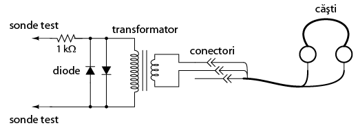
Figure 107: detector audio de semnal

Figure 108: detector audio de semnal
3.4.3 Realizarea detectorului audio de semnale
Căştile, fiind cel mai probabil stereo, vor avea o fişă cu 3 contacte. Vom folosi doar două din cele trei puncte de contact în circuitul nostru. Există două posibilităţi de conectare în acest caz, fie în serie, fie în paralel. Aparent însă, cele mai bune rezultate se obţin folosind conexiunea serie:
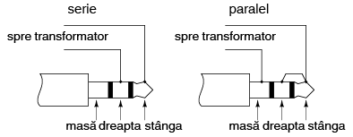
Figure 109: conectarea în serie serie şi paralel a difuzoarelor
Lipiţi cu mare grijă toate conexiunile. Acest detector este extrem de sensibil. Orice conexiuni proaste existente în circuit vor genera zgomote adiţionale nedorite, peste semnalul de tensiune măsurat. Cele două diode conectate în paralel cu primarul transformatorului, împreună cu rezistorul de 1 kΩ, „taie” semnalul de intrare (tensiune) ce depăşeşte 0,7 V. Acest lucru are doar un singur scop: limitarea volumului căştilor audio. Sistemul poate funcţiona foarte bine şi fără aceste diode. Atenţie însă, în acest caz nu va există practic nicio limită a volumului existent în circuit. Simpla conectare a celor două sonde de test la bornele unei baterii (de exemplu) poate produse un sunet asurzitor!
3.4.4 Utilizarea detectorului audio
Pentru conectarea dispozitivului realizat mai sus la o sursă de tensiune mai mare de 1 V, va trebui să atenuăm sensibilitatea extrem de mare a acestuia. Acest lucru se poate realiza prin conectarea unui divizor de tensiune la intrarea circuitului:

Figure 110: atenuarea sensibilităţii detetorului audio

Figure 111: atenuarea sensibilităţii detetorului audio
Atunci când probaţi un semnal de tensiune cu o amplitudine necunoscută, ajustaţi potenţiometrul divizor de tensiune de 100 kΩ aproximativ la jumătate scalei. Dacă sunetul este prea puternic, reajustaţi potenţiometrul (măriţi rezistenţa) şi reîncercaţi. Dacă sunetul este prea slab, descreşteţi rezistenţa potenţiometrului. Acest detector poate fi folosit chiar şi pentru detectarea semnalelor de curent continuu şi a celor ce se află în bandă de frecvenţa radio (semnale sub şi peste domeniul audio). În acest caz, veţi auzi un „click” la conectarea sau deconectarea sondelor de test la sursa de semnal. Practic, cu un astfel de circuit, puteti detecta curenţi de sub 0,1 µA (c.c.) şi semnale de radiofrecvenţa de până la 2 MHz.
Pentru a încerca dispozitivul şi a vă convinge de utilitatea lui, puteţi să aduceţi ambele sonde în contact cu vârful limbii, setând sensibilitatea la maxim. Tensiunea produsă de contactul metal-electrolit (cunoscută sub numele de tensiune galvanică) este foarte mică, dar suficientă pentru a produce „click”-uri ori de câte ori atingeţi sau îndepărtăţi sondele de pe limbă.
La fel ca în cazul sursei de tensiune, puteţi introduce întreg circuitul într-o carcasă pentru a putea fi folosit în viitor. Prin urmare, rezultatul final ar putea arăta astfel:

Figure 112: detector audio de semnal; forma finală
3.5 Detectarea câpurilor magnetice
3.5.1 Scopul experimentului
Efectele inducţiei electromagnetice şi tehnici de ecranare electromagnetică.
3.5.2 Materiale necesare
Vom avea nevoie de un detector audio cu căşti şi o bobină de electromagnet. O bobină luată de la un releu electromagnetic sau de la un solenoid (bobină cilindrică fără miez magnetic) este perfectă pentru această aplicaţie. Circuitul realizat arată astfel:
Figure 113: circuit de detectare a câpurilor electromagnetice

Figure 114: circuit de detectare a câpurilor electromagnetice
3.5.3 Utilizarea detectorului de câpuri electromagnetice
Practic, circuitul a fost deja realizat în secţiunea precentă, şi constă în simpla conectare a unei bobina la ieşirea acestuia (sondele de test). Prin urmare, vom trece direct la explicarea modului de utilizare a unui astfel de detector.
Folosim şi în acest caz detectorul audio pentru detectarea tensiunilor de curent alternativ pentru frecvenţe audio, detector explicat în secţiunea precedentă. Folosim de asemena o bobină pentru a detecta câpurile magnetice de curent alternativ. Tensiunile produse de bobină vor fi destul de mici. Ajustaţi prin urmare sensibilitatea aparatului la maxim.
Există multe surse de câmpuri magnetice la dispoziţie. De exemplu, aduceţi bobina în apropierea ecranului unui televizor sau a tabloului de siguranţe. Orientarea bobinei este la fel de importantă precum distanţa dintre aceasta şi sura câmpurilor magnetice. Încercaţi să descoperiţi acest lucru singuri! Dacă doriţi sunete mai interesante, aduceţi bobina în aproierea plăcii de bază a calculatorului vostru, sau în apropierea hard-disk-ului în timp ce copiaţi ceva. Încercaţi să nu atingeţi însă nicio parte a plăcii de bază, în timp ce calculatorul este în funcţiune, cu oricare dintre părţile metalice expuse ale bobinei de detectare.
O sursă foarte puternică de câmpuri magnetice este transformatorul realizat într-una din secţiunile precedente. O altă sursă o reprezintă circuitul cu bobină variabilă şi bec, prezentate de asemenea într-una din secţiunile precedente.
3.5.4 Ecranarea bobinelor
Puteţi observa din aceste experimente că nu este necesar contactul fizic dintre bobina de detectare şi sursa câmpului magnetic: câpurile magnetice există în spaţiul din jurul surselor ce le emit.
Puteţi încerca de asemenea să ecranaţi bobina faţă de o sursă puternică de câmpuri magnetice folosind diferite materiale. Încercaţi folie de aluminiu, hârtie, oţel, plastic, sau orice alte materiale ce le aveţi la dispoziţie. Care din materialele încercate dau cele mai bune rezultate? (cel mai bun rezultat înseamnă cel mai mic zgomot înregistrat cu ajutorul căştilor). De ce? Care unghiuri (orientări) ale bobine minimizează cuplajul magnetic? (detectarea minimă a semnalului). Ce ne spune acest rezultat legat de poziţionarea bobinelor atunci când interferanţa dintre circuite nu este dorită?
3.6 Detectarea câmpurilor electrice
3.6.1 Scopul experimentului
Efectele cuplajului capacitiv (electrostatic) şi tehnici de ecranare electrostatică.
3.6.2 Materiale necesare
Detector audio cu căşti. Circuitul realizat arată astfel:

Figure 115: detector de câpuri electrice

Figure 116: detector de câpuri electrice
3.6.3 Utilizarea detectorului de câmpuri electrice
Conectaţi una dintre sondele detectorului la un obiect metalic ce se află în contact cu pământul. Aproape orice ţeavă de apă din casă este bună pentru acest lucru. Luaţi cealaltă sondă şi apropiaţi-o de un aparat electrocasnic. Atenţie, nu încercaţi să realizaţi contactul dintre această sondă şi aparatul electrocasnic sau cu orice conductori din interiorul acestuia! Dacă auziţi un bâzâit în căşţi, veţi sţii că în acea zonă se află un câmp electric.
Ţineţi conductorul de detectare în apropierea unei surse puternice de câmp electric şi încercaţi diferite poziţii ale acestuia. Folositi o bucaţică de aluminiu ataşată la capătul conductorului pentru maximizarea capacităţii, şi prin urmare, a abilităţii acestuia de interceptare a câpurilor electrice.
Folosiţi apoi diferite materiele pentru ecranarea conductorului faţă de o sursă de câmp electric. Ce materiale dau cele mai bune rezultate? Cum se compară acest lucru cu experimentul precedent (detectarea câmpurilor magnetice)?
3.7 Circuit de detectare a defazajului
3.7.1 Scopul experimentului
Exemplificarea faptului că însumarea tensiunilor de curent alternativ nu se realizează algebric, ci vectorial (fazorial).
3.7.2 Materiale necesare
Veţi avea nevoie de o sursă de tensiune de ca, doi condensatori de 0,1 µF fiecare, nepolarizaţi şi două rezistenţe de 27 kΩ. Este indicat să folosiţi condensatori ceramici sub formă de disc, întrucât nu sunt sensibili la polaritatea tensiuni (nepolarizaţi), sunt ieftini şi durabil. Evitaţi condensatorii marcaţi cu orice tip de polaritate, întrucât aceştia se vor distruge dacă îi alimentaţi în curent alternativ.